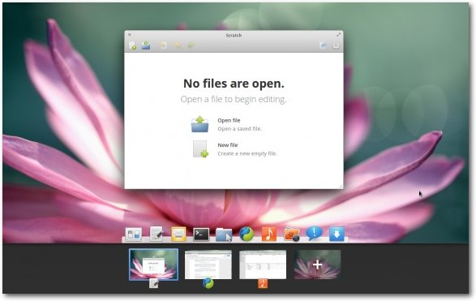

freiesMagazin März 2014
(ISSN 1867-7991)
Topthemen dieser Ausgabe
WLAN-AP mit dem Raspberry PiDer Raspberry Pi ist ein sehr vielseitiges Gerät, das unter anderem auch zum Betreiben vielfältiger Netzwerkdienste verwendet werden kann. So ist es auch möglich, einen eigenständigen WLAN Access Point (AP) mit ihm zu betreiben, was in dem Artikel näher erläutert werden soll. (weiterlesen)
Scratch-2-Tutorial
Scratch ist eine grafische Programmieroberfläche. In diesem Tutorial werden die Neuheiten von Scratch in der Version 2.0 vorgestellt. Konstruiert wird ein kleines Spiel, bei welchem man Abwurfwinkel und Abwurfgeschwindigkeit einstellen muss, um einen Ball auf (mehrere) Fledermäuse zu schießen. (weiterlesen)
Präsentationen mit HTML und reveal.js
Klassischerweise werden Präsentationen und Vorträge mit Desktop-Programmen wie PowerPoint, Impress oder Keynote erstellt. Eine Alternative ist die Kombination aus HTML, CSS und JavaScript, die durch den Einsatz der JavaScript-Bibliothek reveal.js noch deutlich vereinfacht wird. (weiterlesen)
Zum Index
Inhalt
Linux allgemeinKurzvorstellung: elementary OS
Pinguine haben kurze Beine – Die Laufzeiten der Linuxdistributionen
Der Februar im Kernelrückblick
Anleitungen
WLAN-AP mit dem Raspberry Pi
Scratch-2-Tutorial
Präsentationen mit HMTL und reveal.js
Software
Roll'm Up - Ein altes Flipperspiel neu entdeckt
Community
Spielend programmieren: Interview mit Horst Jens
Rezension: Schrödinger programmiert Java
Rezension: Wien wartet auf Dich! – Produktive Projekte und Teams
Magazin
Editorial
Leserbriefe
Veranstaltungen
Konventionen
Impressum
Zum Index
Editorial
Mehr Linuxspiele
Fast jede Woche gibt es irgendwo im Internet ein neues Spiele-Bundle, welches auch Spiele für Linux bereitstellt. Sei es das Humble Bundle [1], das Indie Royale Bundle [2] oder eines der vielen anderen. Daneben gibt es natürlich noch den Humble Store [3], Desura [4] und Steam [5], bei denen man ebenfalls Linux-Spiele erwerben kann. Vor allem bei der Verkaufsplattform von Valve stieg die Anzahl der Linux-Spiele im letzten Jahr um den Faktor 4 [6]. Waren es im Februar 2013 nur 60 Spiele für Linux, sind es jetzt schon über 300. Die meisten kommen dabei von verschiedenen Indie-Entwicklerstudios. Auch wenn die großen Spielestudios fehlen, wird man mit Linux-Spielen geradezu überschüttet. Die Qualität variiert, aber es gibt zahlreiche sehr gute „Perlen“. Daher würden wir uns freuen, wenn wir mehr Spielerezensionen in freiesMagazin lesen könnten. Bisher hat vor allem Redakteur Dominik Wagenführ fleißig gedaddelt und geschrieben, aber es gibt sicherlich noch mehr Gamer da draußen. Wer also gerne mal sein Lieblings-Linuxspiel vorstellen will, schreibt einfach eine E-Mail anRezensenten gesucht
Wer gerne liest, der schreibt auch gern? Das muss nicht zwingend gelten, aber ähnlich wie bei den Spielen oben gibt es sehr viele freiesMagazin-Leser, die privat oder beruflich Computer-Fachbücher lesen müssen – oder das sogar freiwillig tun. Genau diese wollen wir ansprechen, denn wir suchen immer neue Rezensenten, die die Bücher der bekannten Verlage Galileo, mitp-Verlag, O'Reilly oder Carl-Hanser-Verlag lesen und rezensieren. Wenn Sie Interesse haben, schicken Sie eine kleine Kostprobe eines Buches, dass Sie gelesen haben, an[1] https://www.humblebundle.com/
[2] http://www.indieroyale.com/
[3] https://www.humblebundle.com/store
[4] http://www.desura.com/
[5] http://store.steampowered.com/
[6] http://www.pro-linux.de/news/1/20797/steam-anzahl-an-linux-spielen-vervierfacht-sich.html
Das Editorial kommentieren
Zum Index
Kurzvorstellung: elementary OS
von Enrico Zschemisch Neben den großen Desktopumgebungen KDE [1] und GNOME [2] gibt es noch viele andere. Eine davon ist elementary OS [3], die in diesem Artikel vorgestellt werden soll.Einleitung
elementary OS entstand aus dem elementary-GTK- und -Symbol-Thema früherer Tage und ist heute eine Distribution mit eigenem Desktop und einigen eigenen Programmen. Das aktuelle Release „Luna“ basiert auf Ubuntu 12.04 LTS [4] und wird sowohl für x86 (32 bit) als auch für amd64 (64 bit) angeboten. Alternativ kann der Desktop über Ubuntus Paketmanager und das elementary-OS-PPA [5] nachinstalliert werden. Das Entwickler-Team stellt nur Pakete für Ubuntu bereit, für andere Distributionen fehlt es an Manpower. Als technische Grundlage für den Desktop dient Clutter [6], das auch bei GNOME 3 zum Einsatz kommt. Eine OpenGL-Unterstützung seitens der verwendeten Treiber ist also Pflicht.Aufbau und mitgelieferte Programme
elementary OS besteht aus einem Dock am unterem Rand und einem Panel am oberen. Die Ähnlichkeiten zu Apple MacOS X sind eindeutig erkennbar. Das Panel beherbergt den Anwendungsstarter in der linken Ecke und Standardelemente wie Uhr mit Kalender, Tray für laufende Programme, Akku-Anzeige, WLAN-Anzeige, usw.elementary OS nach dem ersten Start.
Im Gegensatz zu Windows (im Desktop-Modus) oder KDE und GNOME 2 gibt es keine Taskbar mit laufenden Anwendungen. Anwendungen werden gestartet und im Dock angezeigt. Mit einem Klick auf das entsprechende Symbol wird das Programm minimiert beziehungsweise wieder angezeigt. Der Anwendungsstarter in der linken oberen Ecke ist dem von Unity in Ubuntu sehr ähnlich. Gestartet wird er mit Klick auf den Button oder der Tastenkombination „Alt“ + „F2“. Dann reicht es, einfach draufloszutippen und es werden die Treffer angezeigt. Im Gegensatz zu Unity werden hier keine Suchbegriffe und IP-Addressen ins Internet übertragen [7]. Die vier Ecken des Desktops lassen sich mit Aktionen konfigurieren.
Fenstermanager Gala
Gala [8] ist der Fenstermanager in elementary OS. Neben grundsätzlichem Fenstermanagement unterstützt Gala die Positionierung von Programmen auf einem Gitter: Bewegt man ein Programmfenster an die linke oder rechte Kante des Bildschirms, so wird es auf die linke oder rechte Hälfte maximiert. Die obere Kante hingegen maximiert das Programmfenster auf den gesamten Bildschirm. Arbeitsbereiche (im Englischen „Workspaces“) werden genauso unterstützt. Der Desktop mit mehreren offenen Workspaces.
Um einen schnellen Überblick über alle gerade ausgeführten Programme zu bekommen und um zu einem bestimmten Programm zu wechseln, bringt Gala ein passendes Feature mit. Von der Übersicht aus lassen sich die Programme auch direkt beenden.
Laufende Programme in der Übersicht.
Mitgelieferte Programme
Neben einigen kleinen Programmen wie einem Taschenrechner und einem Terminal liefert elementary OS zusätzliche Programme mit, die an den Desktop bestmöglich angepasst sind.Noise
Noise ist der Musikplayer von elementary OS. Im Großen und Ganzen wirkt das Programm wie eine Kopie von Rhythmbox.Der Musikplayer “Noise” mit Spaltenansicht.
Maya
Maya ist ein Kalenderprogramm für elementary OS. Momentan lassen sich nur lokale Kalender nutzen, sodass Mayas Nutzen je nach Anwendungsprofil eingeschränkt ist. Auch gibt es keinerlei Einstellungen für Maya, sodass man mit den Standards vorlieb nehmen muss. Die sind zumindest für Deutschland ungewöhnlich, so fängt die Woche am Sonntag statt am Montag an.Das Kalenderprogramm Maya mit einem neuen leeren Kalender.
Mit CalDAV oder ActiveSync kann Maya nicht umgehen, es gibt nur einen lokalen Kalender.
Switchboard
Switchboard ist das Programm, um Einstellungen vorzunehmen. Vom Prinzip her ähnelt es dem Einstellungsprogramm von Unity und GNOME. Switchboard ist kein Ersatz oder eine Alternative zu GSettings oder dconf, sondern ein grafisches Frontend für selbige, um alle Einstellungen des Systems an zentraler Stelle zusammenzufassen.Die Systemeinstellungen im Überblick.
Pantheon Files
Pantheon Files ist der Dateimanager und ist ähnlich wie viele andere Dateimanager aufgebaut. Für externe Datenträger wie USB-Sticks wird in der linken Spalte sowohl der Füllstand als auch ein Knopf zum sicheren Auswerfen des Datenträgers angeboten. Es lassen sich eigene Favoriten definieren, um schnell zwischen Verzeichnissen zu navigieren. Daneben gibt es drei Ansichten: Gitter, Liste und Spalten.Der Dateimanager Pantheon Files.
Der Spalten-Modus erinnert stark an Apples Finder in MacOS X.
Pantheon im Spalten-Modus erinnert an den MacOS-X-Finder.
Fazit
Mit dem etwas anderen Bedienkonzept ist elementary OS definitiv eine Alternative zu den etablierten Größen KDE und GNOME. Wie KDE und GNOME setzt auch elementary OS eine OpenGL-Unterstützung der Grafikkarte voraus, bleibt bei den tatsächlich genutzten Hardware-Ressourcen jedoch so sparsam wie möglich [9]. Über die nächste Version „Isis“ ist kaum etwas bekannt. Angekündigt wurde sie im August 2013 und das Release soll zusammen mit Ubuntu 14.04 im April 2014 erfolgen. Selbst die geplanten Änderungen sind nur schwer zu finden [10]. Das Entwickler-Team postet im Projekt Blog [11] vergleichsweise wenig. Etwas mehr Kommunikation wäre aus Nutzersicht wünschenswert. Links[1] http://www.kde.org/
[2] http://www.gnome.org/
[3] http://elementaryos.org/
[4] http://www.ubuntu.com/
[5] https://launchpad.net/~elementary-os/+archive/stable
[6] http://blogs.gnome.org/clutter/
[7] http://www.heise.de/open/artikel/Die-Woche-Freie-Software-nach-PRISM-1936353.html
[8] http://elementaryos.org/journal/meet-gala-window-manager
[9] http://elementaryos.org/docs/user-guide/technical-specifications
[10] http://elementaryos.org/journal/on-testing-isis
[11] http://elementaryos.org/journal
| Autoreninformation |
| Enrico Zschemisch nutzt elementary OS seit Luna Beta 1 im November 2012 tagtäglich beruflich und am Wochenende auf einem HP Elitebook 2560p. |
Diesen Artikel kommentieren
Zum Index
Pinguine haben kurze Beine – Die Laufzeiten der Linuxdistributionen
von Daniel Schneider Linux ist ein unheimlich fortschrittliches System – die Entwicklung verläuft rasant, und die vielfältigen Neuerungen kommen meist auch recht schnell beim Anwender an. Doch genau das ist nicht immer gewünscht. Die Fortschrittlichkeit wird zum Nachteil, wenn sich zu oft zu viel ändert. Natürlich gibt es eine große Schar an Interessierten, die stets das Neueste vom Neuesten ausprobieren will. Doch es gibt auch die Gruppe, die ein Linux einmal installieren will – und dann möglichst lange ohne böse Überraschungen damit arbeiten. Die Gruppe, die sich nicht um des Systems willen mit selbigem beschäftigen will.Laufzeiten der Linuxdistributionen
Die Verfügbarkeit von Sicherheitsupdates der Linuxdistributionen ist im Vergleich zu etwa Windowsversionen teilweise lächerlich gering – obwohl man auch dort sein System nicht ewig laufen lässt, sondern vielleicht aus anderen Gründen gezwungen ist, es neu zu installieren – sei es, weil man es „zerkonfiguriert“, „zerinstalliert“ hat, oder mal wieder der nächstbeste Trojaner unterwegs war. Dem großen Vorteil von Linux – der Stabilität – wird somit der Wind aus den Segeln genommen, wenn man das theoretisch unbegrenzt lauffähige System trotzdem immer wieder neu installieren oder aktualisieren muss, weil die Distributoren ihre Unterstützung mit Sicherheitsaktualisierungen einstellen. Natürlich kann man auch ein Linux problemlos nach Ende der offiziellen Unterstützung weiter nutzen – doch wenn man keine großen Sicherheitslücken riskieren will, muss man sich selbst um Updates kümmern. Angesichts der Vielzahl von Paketen, aus denen sich eine Distribution zusammensetzt, ein Unterfangen, das den Normalanwender und auch den Fortgeschrittenen in der Regel deutlich überfordert. Einen Browser z. B. kann man problemlos noch eine Zeit lang selbst aktuell halten, doch sobald es tiefer ins System geht, hört der Spaß auf. Doch das Ziel, einmal Linux zu installieren und dann möglichst lange damit glücklich zu sein, ist in der Tat gar nicht so einfach mit den gängigen Distributionen zu realisieren. Erst vor kurzer Zeit hat Ubuntu den Unterstützungszeitraum halbiert – und wer denkt, bei den anderen Distributionen sähe es viel besser aus, ist leider auf dem falschen Dampfer. Gerade die Distributionen, die sich mit einsteigerfreundlicher Oberfläche und Konfiguration empfehlen, haben meist eine kurze Mindesthaltbarkeitszeit.Die aktuellen Lebenszyklen gängiger Distributionen auf einen Blick.
Ubuntu
Ubuntu [1] erscheint ungefähr jedes halbe Jahr neu – allerdings wird es nicht einmal ein Jahr lang unterstützt. Lediglich neun Monate Unterstützung sichert Canonical Nutzern seiner Ubuntu-Versionen seit 2013 (im Gegensatz zu 18 Monaten zuvor) zu. Wer sich also einen Tag vor Erscheinen der nächsten Version ein Ubuntu installiert, muss es nach drei Monaten schon wieder auf die nächste Version aktualisieren, um auf der sicheren Seite zu sein.Ubuntu LTS
Aber da gibt es ja auch noch LTS [2]. Alle zwei Jahre wird eine Ubuntu-Version zur LTS-Version, also langzeitunterstützten Version (Long Term Support) erklärt. Für diese Versionen wird fünf Jahre lang Unterstützung geboten, damit letztlich sogar mehr als bei der Basis – Debian – selber. Das macht den Malus der Neun-Monatsunterstützung der regulären Versionen wieder mehr als wett. Wer sich einen Tag vor Erscheinen der Folgeversion ein Ubuntu installiert, sollte also darauf achten, dass er zur LTS-Variante greift – die dann allerdings auch schon mal ein Jahr älter sein kann als die gerade aktuelle Version.Fedora
Fedora [3] erscheint ca. jedes halbe Jahr, meist im Mai und November. Unterstützt wird eine Distribution mindestens bis zum Erscheinen der übernächsten, in der Praxis bedeutet das 13 Monate. Versionen mit Langzeitunterstützung gibt es bei Fedora nicht. Somit kann man eine Fedora-Installation ohne gravierende Änderungen maximal ein Jahr am Stück nutzen.Linux Mint
Linux Mint [4] orientiert sich bei seinen Veröffentlichungen stark am zugrunde liegenden Ubuntu und kopiert daher auch dessen Supportzyklen. Statt wie bisher anderthalb Jahre bekommt man auf die neuesten Linux-Mint-Versionen nur noch die Hälfte der Zeit Garantie. Und da Mint in der Regel einen Monat nach Ubuntu erscheint, verkürzt sich der Supportzeitraum auf magere acht Monate. Von Ubuntu übernimmt Mint allerdings auch den LTS-Zweig und bietet aktuell für Version 13 (von 2012) noch Support bis 2017.Mageia
Mageia [5] soll alle neun Monate erscheinen, die Versionen werden jedoch bis zum Erscheinen der übernächsten Version unterstützt, also insgesamt 18 Monate. In der Praxis erschien Mageia aber bislang ziemlich genau im Ein-Jahres-Abstand, sodass die übernächste Version noch nicht bereitsteht, wenn die Unterstützung der aktuellen Version endet. Somit ist man letztlich doch wieder gezwungen, die jeweils aktuelle Version zu installieren, will man ohne Unterbrechung ein sicheres Mageia nutzen. Die jeweils anderthalbjährige Unterstützung einer Version wird jedoch eingehalten.openSUSE
Die grüne Distribution soll alle acht Monate in einer neuen Version erscheinen und tut es auch; die geplanten Veröffentlichungen werden bei openSUSE [6] meist eingehalten. Wie bei Mageia werden die Versionen anderthalb Jahre unterstützt, das Überspringen einer Version ist bei openSUSE daher problemlos möglich. Langzeitversionen gibt es bei openSUSE eigentlich nicht, das bei openSUSE angesiedelte Community-Projekt Evergreen [7] bemüht sich allerdings um die Verlängerung der Unterstützung: Es springt ein, wenn der Support eigentlich endet und übernimmt für weitere anderthalb Jahre die Versorgung mit Sicherheitsupdates. Mit Hilfe der Community kommen openSUSE-Installationen auf insgesamt drei Jahre Unterstützung, wenn man die Evergreen-Repositorien einbindet. Jedoch wird nicht jede openSUSE-Version unterstützt, die letzten drei etwa wurden ausgelassen.Debian
Debian [8] kennt keine festen Veröffentlichungszeiträume. Etwa alle zwei Jahre gibt es eine neue stabile Version – und der Support endet nicht mit dem Erscheinen der nächsten Version, sondern die Distribution wird, als „oldstable“ deklariert und mindestens ein Jahr lang weiterhin mit Sicherheitsaktualisierungen versorgt. Somit kann man Debian etwa drei Jahre am Stück nutzen.CentOS
CentOS [9] ist die nichtkommerzielle Variante von Red Hat Enterprise Linux, der Business-Distribution von Red Hat [10]. Während RHEL nicht käuflich erworben werden kann, sondern nur im Rahmen von Supportverträgen zu beziehen ist, steht CentOS allen Interessierten unentgeltlich zur Verfügung. War CentOS bislang ein inoffizieller Klon von Red Hat Enterprise Linux, so gehört CentOS seit Anfang des Jahres 2014 offiziell zu Red Hat. Wie auch RHEL wird CentOS 10 Jahre lang unterstützt. Man erhält hier für Linux-Verhältnisse also tatsächlich Uralt-Software. Wer z. B. jetzt CentOS 6 installiert, ist damit auf dem Software-Stand von 2011, erhält aber ein sicheres System bis 2020.Fazit
Wer einmal Linux installieren und sich dann möglichst wenig um das System kümmern möchte, der kommt an den Unternehmens- und LTS-Versionen nicht vorbei. Ubuntu und Linux Mint in der LTS-Variante sind eine gute Wahl, auch openSUSE bietet dank des Evergreen-Projekts inoffizielle LTS-Unterstützung. Debian und Red-Hat-Abkömmlinge wie CentOS oder Scientific Linux bieten von Haus aus eine längere Unterstützung, wobei gerade letztere meist länger halten als die Festplatte. Fedora, Mageia und die regulären Versionen von Ubuntu, openSUSE und Linux Mint sind wegen der aktuellen Softwareauswahl zwar attraktiv, eignen sich hingegen kaum für das Aufsetzen von verlässlichen Rundum-sorglos-Systemen, an denen man länger als ein paar Monate Freude hat. Links[1] http://www.ubuntu.com/
[2] http://wiki.ubuntuusers.de/Long_Term_Support
[3] https://fedoraproject.org/de/
[4] http://linuxmint.com/
[5] https://www.mageia.org/de/
[6] http://www.opensuse.org/de/
[7] http://en.opensuse.org/openSUSE:Evergreen
[8] http://www.debian.org/
[9] https://www.centos.org/
[10] http://www.redhat.com/
| Autoreninformation |
| Daniel Schneider (Webseite) ist Wissenschaftslektor und ITler, nutzt Linux seit 2003 privat und beruflich, schreibt unter dem Stichwort „Pinguinzubehör“ über freie Software und freut sich, wenn er seine Rechner nicht nächsten Monat schon wieder neu aufsetzen muss. |
Diesen Artikel kommentieren
Zum Index
Der Februar im Kernelrückblick
von Mathias Menzer Basis aller Distributionen ist der Linux-Kernel, der fortwährend weiterentwickelt wird. Welche Geräte in einem halben Jahr unterstützt werden und welche Funktionen neu hinzukommen, erfährt man, wenn man den aktuellen Entwickler-Kernel im Auge behält.Linux 3.14
Der Februar begann mit der Schließung des Merge Windows, das diesmal mit zwei Wochen wieder zu der gewohnten Dauer zurückkehrte [1]. Torvalds wies auch gleich darauf hin, dass die neue Kernel-Versionsnummer 3.14 durchaus an Pi [2] erinnert, er jedoch allen diesbezüglichen Namensvorschlägen eine Absage erteilen wird. Die Blödsinn-Kernel-Namen würden so einfach nicht funktionieren. Und so trägt Linux 3.14 nun „Shuffling Zombie Juror“ als Namen, zu dem er sich vermutlich sowohl von einem Schreibtisch mit Laufband [3] als auch seiner Bürgerpflicht als Geschworener inspirieren ließ. Der junge Kernel hat umfangreiche Korrekturen und Weiterentwicklungen für die neue Firewall-Infrastruktur nftables mit an Bord und auch im Umfeld der Grafiktreiber wurde eifrig gearbeitet. Kritische Prozesse können künftig von SCHED_DEADLINE [4] profitieren, das den Completely Fair Scheduler (CFS) um die Möglichkeit erweitert, Prozesse mit sehr hoher Priorität zu betreiben. Linux 3.14-rc2 [5] fiel vergleichsweise kompakt aus, auch wenn Torvalds argwöhnte, dass die Kernel-Entwickler ihre Pull Requests nur für einen späteren Zeitpunkt zurückhalten würden. Er wurde nicht enttäuscht, die dritte Entwicklerversion [6] fiel wieder umfangreicher aus. Unter den Änderungen waren wieder Korrekturen für nftables und den Radeon-Grafiktreibern sowie die Rücknahme einiger Änderungen an den USB-3.0-Treibern. Den größten Anteil am -rc4 [7] stellte ein Patch dar, mit dem die Einrückung im Quelltext des Dateisystems ReiserFS lesbarer gemacht wurde. Der Red-Hat-Entwickler Dave Jones nahm sich dieses Themas an, da er sich jedes Mal, wenn er darüber stolpert, übergeben müsse. Er hielt sich dabei nicht an die Grenze von 79 Zeichen pro Zeile, dafür sehe der Code jetzt wie C aus.Kernel patchen im Live-Betrieb
„Beim Laufen die Schuhe neu besohlen“ ist eine bekannte Redensart, die der Person, auf die sie sich bezieht, nicht sehr schmeichelt. Doch genau daran mag man denken, wenn man davon hört, dass der Linux-Kernel im laufenden Betrieb aktualisiert werden soll. Gleich zwei bekannte Linux-Distributoren, Suse und Red Hat, haben innerhalb weniger Tage entsprechende Projekte angekündigt. Dabei sind sie jedoch nicht die ersten … Bereits 2008 stellte der MIT-Student Jeff Arnold ein solches Projekt vor (siehe „Kernel-Rückblick“, freiesMagazin 05/2008 [8]), bei dem er Aktualisierungen als Kernel-Module bereit stellte und in den Linux-Kernel nachlud. Arnold gründete mit dieser Technik ein Unternehmen (Ksplice Inc.), das 2011 von Oracle übernommen wurde. Nützlich ist „Hot-Patching“, „Runtime Patching“ oder „Rebootless Updating“ überall dort, wo zwar Aktualisierungen und Korrekturen von Sicherheitslücken schnell eingespielt werden sollen, ein Neustart des jeweiligen Systems jedoch unerwünscht ist. Da Ksplice auf seiner Website [9] über 700 Kunden angibt, scheint Bedarf vorhanden zu sein. Suse hat nun kGraft angekündigt [10], das ähnlich arbeiten soll, jedoch auf Methoden und Techniken zurückgreift, die in den letzten Jahren in Linux aufgenommen wurden. Dies sorgt dafür, dass kGraft, das der Entwickler Vojtěch Pavlík noch als unpolierten Prototypen bezeichnet, erstaunlich einfach gehalten ist. kGraft ist darauf beschränkt, komplette Funktionsaufrufe und deren referenzierte Konstanten auszutauschen, doch das schränke die Nutzbarkeit nach Aussage des Entwicklers nicht spürbar ein. Die Red-Hat-Entwicklerin Linda Wang zog dann auf der devconf.cz mit der Ankündigung nach [11], beim kommenden Collaboration Summit Ende März ein eigenes Kernel-Hot-Patching-Tool namens Kpatch vorzustellen [12]. Red Hat greift dabei ebenfalls auf Methoden zurück, die der Linux-Kernel selbst zur Verfügung stellt. Die beiden Vorstöße von Red Hat und Suse werden Open-Source-Projekte sein. Im Gegensatz zu Ksplice, dessen Open-Source-Version seit dem Kauf durch Oracle nicht mehr aktualisiert wurde, besteht bei den beiden neuen Projekten ein Hoffnungsschimmer, dass es zumindest eine Variante schafft, irgendwann in den Linux-Kernel aufgenommen zu werden. Doch das liegt noch in weiter Ferne! Bis dahin dürften noch einige Zwischenstopps zum Neubesohlen notwendig werden. Links[1] https://lkml.org/lkml/2014/2/2/176
[2] https://de.wikipedia.org/wiki/Kreiszahl
[3] https://plus.google.com/102150693225130002912/posts/ZpofpaZ8ZTa
[4] http://www.pro-linux.de/-0h2150cd
[5] https://lkml.org/lkml/2014/2/9/372
[6] https://lkml.org/lkml/2014/2/16/120
[7] https://lkml.org/lkml/2014/2/23/234
[8] http://www.freiesmagazin.de/freiesMagazin-2008-05
[9] https://www.ksplice.com/
[10] http://www.pro-linux.de/-0h2150fc
[11] https://www.youtube.com/watch?v=xJmD3TfJEO4
[12] http://www.pro-linux.de/-0h215116
| Autoreninformation |
| Mathias Menzer (Webseite) behält die Entwicklung des Linux-Kernels im Blick, um über kommende Funktionen von Linux auf dem laufenden zu bleiben und immer mit interessanten Abkürzungen und komplizierten Begriffen dienen zu können. |
Diesen Artikel kommentieren
Zum Index
WLAN-AP mit dem Raspberry Pi
von Marvin Gülker Der Raspberry Pi [1] ist ein sehr vielseitiges Gerät, das unter anderem auch zum Betreiben vielfältiger Netzwerkdienste verwendet werden kann. So ist es auch möglich, einen eigenständigen WLAN Access Point (AP) [2] mit ihm zu betreiben, was hier näher erläutert werden soll. Der Betrieb eines Wireless Local Area Network (WLAN) gehört mittlerweile wohl zu fast jedem Haushalt dazu. Schließt man heute einen Vertrag über die Zurverfügungstellung von Internet ab, so erhält man im Regelfalle von seinem jeweiligen Anbieter zum Abschluss des Vertrags ein Multifunktionsgerät, das neben der reinen Funktion, eine Verbindung zum größeren Netz des Internetanbieters (Wide Area Network, WAN) und mithin zum Internet herzustellen, das heißt als Modem zu fungieren, auch die Möglichkeit bietet, ein Drahtlosnetzwerk aufzubauen. Die interne Funktionsweise dieser Geräte bleibt vonseiten des Herstellers meist unter Verschluss, geschweige denn, dass man einen Konsolenzugriff auf das zumeist als Linux-Variante ausgeführte Betriebssystem erhielte. Prominente Ausnahmen von dieser Regel sind Hersteller wie Linksys oder AVM, die ihren Abnehmern einen relativ problemlosen Zugriff auf Shell und Betriebssystem gewähren. Router sind zumeist hochspezialisierte Geräte, die darauf getrimmt sind, ihren Haupteinsatzzweck gut und anderweitige Aufgaben überhaupt nicht erfüllen zu können. In den meisten Geräten kommen stromsparende RISC-Prozessoren zum Einsatz; in neuester Zeit kommen mehr und mehr Geräte auf den Markt, deren Prozessor in ARM-Architektur gefertigt ist. Diese Rahmenbedingungen machen es denkbar schwierig, selbst bei einem verhältnismäßig offenen System beliebige Dienste auf der Hardware zu betreiben. Zu schnell erreicht man die Kapazität des oft nur geringen RAMs, anspruchsvollere Rechenaufgaben geraten zur Geduldsprobe. Dieser Artikel will sich daher damit beschäftigen, wie man mit gewöhnlicher Hardware einen eigenen WLAN Access Point betreibt, zu dem weitere Dienste nach Belieben zu- oder abgeschaltet werden können und dessen Hardware den angestrebten Aufgaben entsprechend größtenteils frei gewählt werden kann. Zum Einsatz kommt im konkreten Fall der Einplatinencomputer Raspberry Pi, doch sind die Erklärungen generisch und können auf jedes vollwertige Linux-System auf Systemd-Basis angewandt werden.Voraussetzungen
Für den Betrieb eines eigenen WLANs sind einige Rahmenbedingungen erforderlich. Als erster und wichtigster Punkt ist hier eine funktionsfähige WLAN-Hardware zu nennen, die zwingend im Master-Modus betrieben werden können muss. Die Suche nach einer solchen gestaltet sich schnell schwierig, denn obwohl die Unterstützung der einzelnen Linuxtreiber für spezifische Chipsätze der Website des Linuxkernels [3] entnommen werden kann, ist es aus den Produktbeschreibungen meist nicht ersichtlich, welcher Chipsatz in einem USB-WLAN-Adapter verbaut ist, bis man die Gelegenheit hatte, ihn selbst zu testen. Persönlich hat der Autor einen TL-WN722N von TP-Link [4] im Einsatz, der allerdings nicht mehr hergestellt wird. Der verbaute Chipsatz stammt von Atheros und wird vom renommierten ath9k-Modul vollständig unterstützt.$ lsusb | grep 802.11
Bus 001 Device 006: ID 0cf3:9271 Atheros Communications, Inc. AR9271 802.11n
Speziell für den Raspberry Pi ist zum Betrieb eines WLANs mit einem
solchen WLAN-USB-Adapter zusätzlich ein USB-Hub mit eigener
Stromversorgung erforderlich, da die vom Pi über die USB-Ports
gelieferte Spannung nicht ausreicht, um einen stabilen WLAN-Betrieb zu
gewährleisten. Häufige Ausfälle und Verbindungsabbrüche sind die
Folge. Läuft alles gut, könnte die Interface-Liste so aussehen:
Bus 001 Device 006: ID 0cf3:9271 Atheros Communications, Inc. AR9271 802.11n
$ ip link list
1: lo: <LOOPBACK,UP,LOWER_UP> mtu 65536 qdisc noqueue state UNKNOWN mode DEFAULT group default
link/loopback 00:00:00:00:00:00 brd 00:00:00:00:00:00
[...]
4: eth0: <BROADCAST,MULTICAST,UP,LOWER_UP> mtu 1500 qdisc pfifo_fast state UP mode DEFAULT group default qlen 1000
link/ether b8:27:eb:fe:1c:c1 brd ff:ff:ff:ff:ff:ff
5: wlan0: <BROADCAST,MULTICAST,UP,LOWER_UP> mtu 1500 qdisc mq state UP mode DEFAULT group default qlen 1000
link/ether f8:1a:67:21:d2:a7 brd ff:ff:ff:ff:ff:ff
[...]
eth0 stellt hierbei das am Pi in Revision B ohnehin vorhandene
Ethernet-Interface da, wlan0 repräsentiert den USB-WLAN-Adapter.
Auf der Softwareseite ist die Installation des WLAN-Daemons
hostapd [5] erforderlich. Will man
IP-Adressen nicht statisch vergeben, so ist zudem die Installation eines
IP-Management-Daemons wie dnsmasq [6]
ratsam, der sowohl zur Vergabe von IPv4-Adressen per DHCP als auch zur
Versendung von IPv6-Router-Advertisements verwendet werden kann. Die
entsprechenden Pakete sollten in den Repositorys aller gängigen
Distributionen aufzufinden sein.
Die Notwendigkeit beider Dienste zeigt die klare
Aufgabenteilung: hostapd ist nur für die
Verschlüsselung der Drahtlosverbindung zuständig. Clients, die
diese erste Hürde mit korrektem Passwort überwinden, wären ohne einen
dahinter verfügbaren DHCP-Server (oder eine anderweitige
IP-Konfiguration)
trotzdem nicht in der Lage, eine
Verbindung zum Netzwerk aufzubauen.
1: lo: <LOOPBACK,UP,LOWER_UP> mtu 65536 qdisc noqueue state UNKNOWN mode DEFAULT group default
link/loopback 00:00:00:00:00:00 brd 00:00:00:00:00:00
[...]
4: eth0: <BROADCAST,MULTICAST,UP,LOWER_UP> mtu 1500 qdisc pfifo_fast state UP mode DEFAULT group default qlen 1000
link/ether b8:27:eb:fe:1c:c1 brd ff:ff:ff:ff:ff:ff
5: wlan0: <BROADCAST,MULTICAST,UP,LOWER_UP> mtu 1500 qdisc mq state UP mode DEFAULT group default qlen 1000
link/ether f8:1a:67:21:d2:a7 brd ff:ff:ff:ff:ff:ff
[...]
Konfiguration
Kernel
Der Pi muss die vom Ethernet-Interface angenommenen Pakete auf das WLAN-Interface weiterleiten und umgekehrt. Mit anderen Worten: Er fungiert als Router, also als Knotenpunkt zwischen zwei physikalisch getrennten Netzen (hier dem Kabelnetz und dem Drahtlosnetz). Diese „Durchleitungsfunktion“ von Linux ist aus Sicherheitsgründen standardmäßig deaktiviert, kann aber leicht wie folgt aktiviert werden:# sysctl net/ipv4/conf/all/forwarding=1
# sysctl net/ipv6/conf/all/forwarding=1
Diese Befehle setzen für alle vorhandenen Netzwerkinterfaces den
Weiterleitungsstatus für den momentanen Boot. Eine dauerhafte
Aktivierung lässt sich durch Anlegen der Datei
/etc/sysctl/90-ipforwarding.conf (auf einigen Distributionen
durch Anpassung der Datei /etc/sysctl.conf) erreichen:
# sysctl net/ipv6/conf/all/forwarding=1
net.ipv4.ip_forward = 1
net.ipv6.conf.all.forwarding = 1
Selbstverständlich können diese Optionen auch nur für diejenigen
Interfaces gesetzt werden, für die es gewünscht wird.
net.ipv6.conf.all.forwarding = 1
hostapd
Der WLAN-Dienst hostapd wird mittels der Datei /etc/hostapd/hostapd.conf konfiguriert. Standardmäßig ist diese Datei mit einer Fülle von Konfigurationsdirektiven bestückt, die allerdings nur als Beispiele zu verstehen sind und die dementsprechend nicht einschüchternd wirken sollten. hostapd ermöglicht hochkomplexe Setups mit WPA-Enterprise-Verschlüsselung [7], externem RADIUS-Server [8] und Authentifikation gegen LDAP [9], die für das übliche Heim-WLAN allerdings sowohl Overkill als auch zu schwer zu warten sind. Die Reduktion auf das Wesentliche ergibt eine Konfiguration, die der folgenden ähneln wird:# Interface
interface=wlan0
driver=nl80211
# Main settings
ssid=Mein tolles WLAN
channel=11
hw_mode=g
country_code=DE
# Security
wpa=3
wpa_key_mgmt=WPA-PSK
wpa_pairwise=TKIP
rsn_pairwise=CCMP
wpa_passphrase=geheime_passphrase
auth_algs=1
# Logging
logger_syslog=-1
logger_syslog_level=2
# Misc
max_num_sta=60
# Files
deny_mac_file=/etc/hostapd/hostapd.deny
Diese Konfiguration setzt sich aus verschiedenen Elementen
zusammen. Zunächst die grundlegenden Einstellungen: Die Einstellung
interface gibt den Namen des Netzwerkinterfaces an, das von hostapd
in den master-Modus versetzt werden soll, im konkreten Fall ist dies
derjenige des WLAN-USB-Adapters. Mit driver=nl80211 legt man den
Interfacetyp fest, das heißt wie hostapd das Interface anspricht. Für
alle gängigen WLAN-Verwendungen ist hier stets nl80211 zu wählen,
womit auf das mac80211-Subsystem des Kernels zurückgegriffen wird.
ssid legt den Namen des WLANs fest, so, wie er von den typischen
Client-Programmen angezeigt wird. channel legt die Frequenz fest,
auf der das WLAN gefunkt werden soll; eine Übersicht, in der
Kanalnummer und Frequenz gegenübergestellt werden, kann in der
englischen Wikipedia eingesehen werden [10].
Allerdings dürfen nicht alle theoretisch möglichen Frequenzen genutzt
werden; hierzulande regelt die Bundesnetzagentur die für WLAN zulässigen
Frequenzbereiche. Die für den Heimgebrauch freigegebenen Frequenzen können
auf der Website der Behörde separat für WLAN im
2,4 GHz-Bereich [11]
und 5 GHz-Bereich [12]
eingesehen werden. Die Nutzung nicht genehmigter Frequenzen stellt nach
§149 Abs. 1 Nr. 10 TKG [13] eine
Ordnungswidrigkeit da, die nach §149 Abs. 2 Satz 1 3. Variante TKG [13]
mit einem Bußgeld von bis zu 500.000 Euro geahndet werden kann. Der Parameter
country_code instruiert hostapd, die im jeweiligen Land geltenden
Vorschriften hinsichtlich der Kanal- und Sendeleistungsgrenzen zu beachten. Allein
auf ihn verlassen sollte man sich aus naheliegenden Gründen jedoch nicht.
Die Kanäle 9 und 10 sind üblicherweise nicht zu empfehlen, da sie
häufig Opfer von Interferenzen durch Mikrowellenherde
werden. Ansonsten ist es ratsam, die in der Umgebung bereits
genutzten Kanäle mit Werkzeugen wie iwlist(8) festzustellen und zum
Zwecke möglichst geringer Interferenz einen noch nicht genutzten Kanal
auszuwählen.
interface=wlan0
driver=nl80211
# Main settings
ssid=Mein tolles WLAN
channel=11
hw_mode=g
country_code=DE
# Security
wpa=3
wpa_key_mgmt=WPA-PSK
wpa_pairwise=TKIP
rsn_pairwise=CCMP
wpa_passphrase=geheime_passphrase
auth_algs=1
# Logging
logger_syslog=-1
logger_syslog_level=2
# Misc
max_num_sta=60
# Files
deny_mac_file=/etc/hostapd/hostapd.deny
# ip link set wlan0 up
# iwlist wlan0 scan | grep -A1 Channel:
Channel:1
Frequency:2.412 GHz (Channel 1)
--
Channel:6
Frequency:2.437 GHz (Channel 6)
--
Channel:104
Frequency:5.25 GHz
# ip link set wlan0 down
Im Beispiel sind die Kanäle 1, 6 und 104 bereits von WLANs belegt,
wobei letzterer ein Kanel aus dem 5GHz-Bereich ist und dementsprechend
ohnehin erst einmal zu ignorieren ist (die meisten handelsüblichen
USB-WLAN-Adapter sind nicht in der Lage, 5 GHz im Master-Modus zu
stemmen). Es sollte daher ein Kanal gewählt werden, der von den
belegten Kanälen 1 und 6 möglichst weit entfernt ist; in der
Beispielkonfiguration ist dies Kanal 11.
Die abschließende Angabe hw_mode=g legt den Modus fest, in dem
hostapd das Interface betreiben wird. Es handelt sich dabei um den
letzten Buchstaben des entsprechenden IEEE 802.11-Standards, wie
folgender Tabelle entnommen werden kann:
# iwlist wlan0 scan | grep -A1 Channel:
Channel:1
Frequency:2.412 GHz (Channel 1)
--
Channel:6
Frequency:2.437 GHz (Channel 6)
--
Channel:104
Frequency:5.25 GHz
# ip link set wlan0 down
| WLAN-Frequenzbereiche | ||
| Wert | Standard | Frequenz |
| a | IEEE 802.11a | 5 GHz |
| b | IEEE 802.11b | 2,4 GHz |
| g | IEEE 802.11g | 2,4 GHz |
| ad | IEEE 802.11ad | 60 GHz |
| Verschlüsselungsmethoden | ||
| wpa=n | Verschlüsselung | Anwendbare Direktiven |
| wpa=1 | WPA | wpa_pairwise |
| wpa=2 | WPA2 | rsn_pairwise |
| wpa=3 | WPA und WPA2 | wpn_pairwise und rsn_pairwise |
# List of MAC addresses that are not allowed to authenticate (IEEE 802.11)
# with the AP.
00:20:30:40:50:60
00:ab:cd:ef:12:34
00:00:30:40:50:60
Damit ist die Konfiguration von hostapd abgeschlossen. Umfangreiche
Dokumentation ist in Form einer Beispieldatei [19]
sowie auf der Website von Linux [20]
verfügbar.
# with the AP.
00:20:30:40:50:60
00:ab:cd:ef:12:34
00:00:30:40:50:60
dnsmasq
Ein laufendes WLAN ist ja schön und gut, wenn allerdings kein DHCP-Server verfügbar ist, der IP-Adressen vergibt, hilft das wenig. Bei der Zuteilung von IP-Adressen an das WLAN gibt es grundsätzlich mehrere Möglichkeiten, die um das Problem kreisen, wie Pakete von der einen physikalischen Seite des Netzwerks (Kabelnetz) auf die andere (WLAN) geroutet werden können und umgekehrt. Von den unten vorgestellten Varianten kommt nur Möglichkeit 1 ohne Subnetz für das WLAN aus, da in allen anderen Fällen die Pakete zunächst den AP als Zwischenstation passieren müssen, wo sie bis zur IP-Ebene „ausgepackt“ und dann auf dem neuen Interface wieder „eingepackt“ und weitergeschickt werden (das ist die typische Routerfunktion). Daraus ergibt sich, dass ein Client im Kabelnetz K1 einen Client im WLAN-Netz W1 zwar über die IP adressieren, nicht aber direkt erreichen kann. K1 muss die Zwischenstation, den AP, kennen, um zu wissen, wohin er sein Paket zunächst versenden soll. Angelehnt an die Syntax von ip(8) könnte man sagen, er muss wissen, via welchen Knoten er das Paket versenden soll. Mit diesem Wissen wird das an W1 adressierte Paket zunächst zum AP geschickt, der seinerseits direkt sowohl K1 als auch W1 ohne weitere Zwischenstation erreichen kann.Grundlegender physikalischer Netzwerkaufbau.
- Ein externer DHCP-Server (etwa das bekannte Multifunktionsgerät des Internetanbieters) übernimmt die Adressvergabe auch im WLAN, ohne eigenes Subnetz für dasselbe. Dies erfordert einen bridge-fähigen WLAN-Chipsatz, der allerdings nur selten verfügbar ist.
- Auf dem AP läuft ein DHCP-Daemon, der die Adressvergabe nur für das WLAN übernimmt. Der Rest des Netzwerks wird von einem anderen, schon vorhandenen DHCP-Daemon verwaltet. In dieser Variante würde man ein eigenes Subnetz für das WLAN verwenden, um K1 mitteilen zu können, wohin es die an WLAN-Clients adressierten Pakete überhaupt zunächst hin verschicken muss.
- Auf dem AP läuft ein DHCP-Daemon, der die Adressvergabe für das gesamte Netzwerk, also sowohl das Kabel- als auch das WLAN-Netz, übernimmt. Auch hier würde man separate Subnetze für Kabel- und WLAN-Teil des Netzwerks wählen.
# ip addr add 192.168.0.2/24 dev eth0
# ip addr add 192.168.1.1/24 dev wlan0
# ip addr add 192.168.1.1/24 dev wlan0
Netzwerkaufbau mit IPv4-Adressen.
Mit diesem Vorwissen kann die Konfiguration von dnsmasq, einem DHCP-Daemon, in Angriff genommen werden. Der Dienst wird über die Datei /etc/dnsmasq.conf konfiguriert, die wie folgt aussehen könnte:
# Target interface
interface=wlan0
# DHCP range for Wifi
dhcp-range=192.168.1.2,192.168.1.254,6h
# DNS
dhcp-option=option:dns-server,192.168.0.1
# log-dhcp
Die erste Direktive ist relativ selbsterklärend; sie legt das
Interface fest, auf dem dnsmasq lauschen soll. Lässt man sie ganz
weg, lauscht dnsmasq auf allen verfügbaren Interfaces. Mit der
nächsten Direktive wird der Adressraum angegeben, aus dem der Daemon
IPv4-Adressen vergibt. Hier sollte man darauf achten, sowohl die
reservierten Adressen für Netzwerk und Broadcast (192.168.1.0,
192.168.1.255) als auch die Adresse auszunehmen, die der AP im
WLAN-Netz für sich selbst beansprucht (192.168.1.1), um unnötige
Prüfungen auf Adresskollisionen zu vermeiden.
dnsmasq ist ein ausgesprochen vielseitiger Daemon. Neben der bloßen
Funktion als DHCP-Server kann er unter anderem auch dazu verwendet
werden, DNS-Dienste und IPv6-Router-Advertisements bereitzustellen. Da
der vorliegende Artikel sich jedoch ausschließlich mit der
Bereitstellung eines funktionsfähigen WLANs befasst, soll diese
erweiterte Konfiguration Aufgabe des Lesers sein; für den Moment soll
es
ausreichen, den anfragenden WLAN-Clients als DNS-Server das
Multifunktionsgerät des Internetanbieters zu empfehlen, was mithilfe
der Direktive dhcp-option geschieht. Das DHCP-Protokoll unterstützt
eine ganze Reihe von Optionen, die an die Clients übermittelt werden
und die über die bloße Vergabe von IP-Adressen weit hinausgehen; alle
offiziell von dnsmasq unterstützten Optionen lassen sich
mithilfe des Befehls
interface=wlan0
# DHCP range for Wifi
dhcp-range=192.168.1.2,192.168.1.254,6h
# DNS
dhcp-option=option:dns-server,192.168.0.1
# log-dhcp
$ dnsmasq --help dhcp
mit Optionsnummer und -name ausgeben. Die im Beispiel auskommentierte
Direktive log-dhcp veranlasst dnsmasq, die an jeden einzelnen
Client versendeten DHCP-Optionen detailliert im Syslog zu
protokollieren; wer nachschaut, wird feststellen, dass der Daemon schon
standardmäßig eine ganze Reihe von Optionen sendet, von denen
insbesondere die netzwerkspezifischen herauszuheben sind:
[...]
dnsmasq-dhcp[4725]: 3013853912 sent size: 4 option: 1 netmask 255.255.255.0
dnsmasq-dhcp[4725]: 3013853912 sent size: 4 option: 28 broadcast 192.168.1.255
dnsmasq-dhcp[4725]: 3013853912 sent size: 4 option: 3 router 192.168.1.2
dnsmasq-dhcp[4725]: 3013853912 sent size: 4 option: 6 dns-server 192.168.0.1
[...]
Solange dnsmasq mithilfe der dhcp-option-Direktive nichts
Abweichendes mitgeteilt wird, geht der Dienst davon aus, dass er
selbst auf dem für die Clients maßgeblichen Router läuft. Daraus
ergibt sich, dass die für die Clients notwendigen Routingoptionen wie
die Netzmaske/Präfixlänge (netmask, hier 255.255.255.0 = /24), der
Broadcast des Netzes (broadcast, hier 192.168.1.255) und ganz besonders
der Default-Gateway (router, hier 192.168.1.2) alle der
Netzwerkkonfiguration des Rechners entnommen werden, auf dem dnsmasq
läuft. Daher entsprechen die oben gezeigten Optionen bis auf die
manuell gesetzte Option 6 (dns-server) auch haargenau der
Netzwerkkonfiguration des Raspberry Pi. Die so übersendeten
DHCP-Optionen werden vom DHCP-Client auf dem Client-Rechner
ausgewertet, der sich um die Konfiguration des Netzwerkinterfaces des
Clients kümmert.
Die vollständige Dokumentation zur Konfigurationsdatei von dnsmasq
kann dessen Manpage dnsmasq(8) entnommen werden.
dnsmasq-dhcp[4725]: 3013853912 sent size: 4 option: 1 netmask 255.255.255.0
dnsmasq-dhcp[4725]: 3013853912 sent size: 4 option: 28 broadcast 192.168.1.255
dnsmasq-dhcp[4725]: 3013853912 sent size: 4 option: 3 router 192.168.1.2
dnsmasq-dhcp[4725]: 3013853912 sent size: 4 option: 6 dns-server 192.168.0.1
[...]
Das Multifunktionsgerät
Auch das bisher nur am Rande vorgekommene Multifunktionsgerät des Internetanbieters muss ein wenig umkonfiguriert werden, um ihm mitzuteilen, wie es die Clients in Kabel- und WLAN-Netz erreichen kann. Jedes etwas bessere Gerät bietet die Möglichkeit, die fest zugewiese IP und deren Präfixlänge zu verändern sowie statische Routen zu hinterlegen. Da die Clients im Kabelnetzwerk ihre IP-Adresse nicht vom AP, sondern vom Multifunktionsgerät beziehen, besteht für sie keine Möglichkeit zu wissen, wohin sie Pakete für das WLAN-Netz schicken sollen. Sie senden, sofern nicht jeder Client einzeln entsprechend konfiguriert wird, alles an ihr Standardziel (default gateway), in diesem Falle das Multifunktionsgerät. Es ist daher zweckmäßig, diesem beizubringen, an das WLAN-Subnetz adressierte Pakete an den AP zu routen, der diese dann entsprechend weiterleiten kann. Da die Weboberflächen dieser Geräte von Hersteller zu Hersteller denkbar verschieden aufgebaut sind, können an dieser Stelle leider keine genauen Hinweise gegeben werden, wie dies zu bewerkstelligen ist; oftmals muss man einen „Experten-“ oder „erweiterten Modus“ anwählen, bevor man die „sensiblen“ Einstellungen betreffend das Routing verändern kann. Zunächst ist als neue statische Adresse und Präfixlänge 192.168.0.1/24 zu wählen. Für ältere Router, die statt nach Präfixlängen nach den veralteten Subnetzmasken fragen, kann man eine entsprechende Konvertierungstabelle [21] bemühen. Sodann fügt man eine einzelne statische Route ein, die alle an das WLAN-Netz adressierten Pakete an den AP weiterleitet. Das entsprechende Shell-Kommando würde so aussehen:# ip route add 192.168.1.0/24 via 192.168.0.2
Als Zieladresse ist - logischerweise - die Kabelnetz-Adresse des
Access Points
zu wählen. Auch hier kann natürlich zur Konvertierung
Präfixlänge/Subnetzmaske eine Tabelle bemüht werden.
dnsmasq teilt sich wie zuvor schon beschrieben den WLAN-Clients
ohnehin selbst als Default-Gateway mit, sodass eine Konfiguration
der einzelnen WLAN-Clients hinsichtlich der Routen unnötig ist. Der AP
fungiert für die WLAN-Clients sowohl als Gateway zum Internet als auch
zum Kabelnetz. Umgekehrt senden die Kabel-Clients ihre Pakete alle an
das Multifunktionsgerät des Internetanbieters, auf dem gerade eben die
neue statische Route hinterlegt wurde; erreicht dieses ein an einen
WLAN-Client adressiertes Paket, so wird es dieses an 192.168.0.2, den
AP, weiterleiten, der weiß, wohin es weiter zu übermitteln
ist. Darüber hinaus ist es allerdings wichtig zu wissen, dass ohne die
Hinterlegung der statischen Route im Multifunktionsgerät ein nicht
unerhebliches Routingproblem entstünde: Zwar würden Pakete aus
dem WLAN-Netz korrekt ins Internet geroutet, die Antwort des
entfernten Internetservers jedoch würde nur bis zum
Multifunktionsgerät gelangen, das nicht wüsste, wohin mit dem
unbekannten Subnetz. Die Pakete würden verworfen und der WLAN-Client
würde nie eine Antwort auf seine Anfragen erhalten.
Nicht vergessen werden sollte auch, den DHCP-Server des
Multifunktionsgeräts so einzustellen, dass er keine Adressen im
Bereich des DHCP-Servers auf dem AP, d. h. keine Adressen im
Raum 192.168.1.0/24, vergibt.
Services
Die Startreihenfolge von dnsmasq und hostapd ist nicht ganz willkürlich. dnsmasq verweigert schlicht den Dienst am Interface, wenn sich dieses nicht in irgendeinem aktiven Zustand befindet. Unglücklicherweise hängt (zumindest unter Arch Linux) die Service-Datei von dnsmasq in keinster Weise von derjenigen von hostapd ab, sodass die Funktionalität des DHCP-Servers beim Systemstart ein bloßes Zufallsprodukt ist. Um dem Abhilfe zu schaffen, muss die Servicedatei von dnsmasq so angepasst werden, dass sie auf hostapd Rücksicht nimmt. Dazu wird zunächst die Standard-Service-Datei in den Admininistrationsbereich kopiert (die Dateien in /etc haben für Systemd Vorrang vor denen in /usr):# cp /usr/lib/systemd/system/dnsmasq.service /etc/systemd/system
Die so neu gewonnene Datei namens /etc/systemd/system/dnsmasq.service wird um
die Zeile After=hostapd.service im Abschnitt „Unit“ ergänzt,
sodass sie im Ergebnis wie folgt lautet:
[Unit]
Description=A lightweight DHCP and caching DNS server
After=network.target
After=hostapd.service
Documentation=man:dnsmasq(8)
[Service]
Type=dbus
BusName=uk.org.thekelleys.dnsmasq
ExecStartPre=/usr/bin/dnsmasq --test
ExecStart=/usr/bin/dnsmasq -k --enable-dbus --user=dnsmasq --pid-file
ExecReload=/bin/kill -HUP $MAINPID
[Install]
WantedBy=multi-user.target
Alias=dbus-uk.org.thekelleys.dnsmasq
Nun können die Dienste in den Systemstart eingetragen und gestartet
werden:
Description=A lightweight DHCP and caching DNS server
After=network.target
After=hostapd.service
Documentation=man:dnsmasq(8)
[Service]
Type=dbus
BusName=uk.org.thekelleys.dnsmasq
ExecStartPre=/usr/bin/dnsmasq --test
ExecStart=/usr/bin/dnsmasq -k --enable-dbus --user=dnsmasq --pid-file
ExecReload=/bin/kill -HUP $MAINPID
[Install]
WantedBy=multi-user.target
Alias=dbus-uk.org.thekelleys.dnsmasq
# systemctl enable hostapd
# systemctl enable dnsmasq
# systemctl start hostapd
# systemctl start dnsmasq
Läuft alles gut, so kann nun das neue, hausgebastelte WLAN verwendet
werden.
# systemctl enable dnsmasq
# systemctl start hostapd
# systemctl start dnsmasq
Weiterführendes
Dieser Artikel beschreibt lediglich eine Minimalkonfiguration. Mit einem voll funktionstüchtigen AP lässt sich jedoch noch sehr viel mehr machen; so kann etwa ein SixXS-Tunnelendpunkt für IPv6 [22] verwaltet und so das heimische Netz mit IPv6 ausgestattet, dnsmasq um DNS- und IPv6-Router-Advertisement-Funktionalität erweitert oder OpenVPN als sicherer Hafen für Fernverbindungen ins heimische Netz betrieben werden. Viele weitere Anwendungen sind denkbar, die nun nicht mehr von der verschlossenen Hardware des Internetanbieters blockiert werden. Es lebe die freie und quelloffene Software! Links[1] http://www.raspberrypi.org
[2] https://de.wikipedia.org/wiki/Wireless_Access_Point
[3] http://wireless.kernel.org/en/users/Drivers
[4] http://www.amazon.de/TP-Link-TL-WN72...
[5] http://hostap.epitest.fi/hostapd/
[6] http://www.thekelleys.org.uk/dnsmasq/doc.html
[7] https://de.wikipedia.org/wiki/Wi-Fi_Protected_Access
[8] https://de.wikipedia.org/wiki/RADIUS_(Protokoll)
[9] https://de.wikipedia.org/wiki/Lightweight_Directory_Access_Protocol
[10] https://en.wikipedia.org/wiki/List_of_WLAN_channels
[11] http://www.bundesnetzagentur.de/... /2013_10_WLAN_2,4GHz_pdf.pdf...
[12] http://www.bundesnetzagentur.de/... /2010_07_WLAN_5GHz_pdf.pdf...
[13] http://dejure.org/gesetze/TKG/149.html
[14] https://de.wikipedia.org/wiki/Pre-shared_key
[15] https://de.wikipedia.org/wiki/CCMP
[16] https://en.wikipedia.org/wiki/Temporal_Key_Integrity_Protocol
[17] https://de.wikipedia.org/wiki/Wi-Fi_Protected_Access#Angriffsm.C3.B6glichkeiten
[18] https://de.wikipedia.org/wiki/Wired_Equivalent_Privacy#Schwachstellen
[19] http://hostap.epitest.fi/cgit/hostap/plain/hostapd/hostapd.conf
[20] http://wireless.kernel.org/en/users/Documentation/hostapd
[21] http://www.rjsmith.com/CIDR-Table.html
[22] https://de.wikipedia.org/wiki/Liste_von_IPv6-Tunnelbroker
| Autoreninformation |
| Marvin Gülker (Webseite) ist Jura-Student, Programmierer und höchst interessiert an allem, was mit Netzwerken unter Linux zu tun hat. |
Diesen Artikel kommentieren
Zum Index
Scratch-2-Tutorial
von Horst Jens Scratch [1] ist eine grafische Programmieroberfläche. In diesem Tutorial werden die Neuheiten von Scratch in der Version 2.0 vorgestellt. Konstruiert wird ein kleines Spiel, bei welchem man Abwurfwinkel und Abwurfgeschwindigkeit einstellen muss, um einen Ball auf (mehrere) Fledermäuse zu schießen. Redaktioneller Hinweis: Der Artikel „Scratch 2 Tutorial“ erschien erstmals im RIS Journal 01 [2].Scratch
Die erste Version der Programmieroberfläche Scratch wurde 2003 von der Abteilung Lifelong Kindergarten Group [3] des MIT Media Labs (Massachusetts Institute of Technology [4]) entwickelt. Scratch ist bis zur Version 1.4 freie Software (GPL-lizenziert). Der Sourcecode der neueren Version (Scratch 2.0) ist laut Scratch-Homepage noch nicht verfügbar, wird aber vermutlich ebenfalls frei lizenziert werden. Scratch 2.0 läuft rein im Webbrowser. Außer einer Internetverbindung und einem modernen Webbrowser (mit installiertem Adobe Flash) ist keine Installation erforderlich. Auf der Scratch-Website wird auch eine noch experimentelle Offline-Version [5] zum Download angeboten. In Scratch selbst können bewegbare, animierbare Grafiken – sogenannte Sprites [6] – mit Skripten programmiert werden, ohne einen einzigen Befehl eintippen zu müssen. Stattdessen werden Logik-Blöcke ähnlich wie Puzzle-Steine mit der Maus aneinandergefügt. Dadurch eignet sich Scratch sehr gut für Programmieranfänger und Schulen, um z. B. kleine Spiele, Filme oder Animationen zu erstellen. Scratch wird mit einigen Grafiken und Soundeffekten ausgeliefert, welche löblicherweise alle unter Creative Commons (CC-BY-SA 3.0 [7]) lizenziert sind (ausgenommen davon sind das Scratch-Markenzeichen, die Scratch-Katze und das -Logo). Die mit Scratch erstellten Spiele lassen sich per Knopfdruck weltweit veröffentlichen („Share“) wodurch sie ebenfalls CC-BY-SA 3.0 lizenziert sind. Durch die „Look-inside“-Funktion kann man jedes veröffentlichte Werk auf der Scratch-Website klonen („Remix“) und umbauen, ähnlich wie bei „erwachsenen“ Code-Repositorys.Account anlegen
Der erste Schritt, um mit Scratch arbeiten zu können, besteht darin, sich auf der Scratch-Homepage kostenlos zu registrieren und einen Scratch-Account anzulegen. Sodann kann mittels „New project“ der Scratch-Programmiereditor aufgerufen werden. Man sieht das Scratch-Maskottchen, eine orange Katze. Es empfiehlt sich zu diesem Zeitpunkt das Scratch-Projekt zu benennen (anstatt „Untitled“ im Feld oben einen eigenen Namen hineintippen, z. B. „Wurfdemo“) sowie die Spracheinstellung auf Englisch umzustellen (Weltkugel-Icon direkt rechts vom Scratch-Schriftzug oben links). Der Grund dafür ist, dass in fast allen Programmiersprachen englische Befehlsnamen verwendet werden und man sich (und seinen Schülern) nichts Gutes damit tut, „Wenn sonst“ anstatt das international gebräuchliche „If else“ lernen zu lassen. Die Spracheinstellungen lassen sich jederzeit ändern.Sprites.
Anlegen der vier Sprites
Die orange Katze kann man gleich löschen und erstellt stattdessen vier eigene Sprites: Eine Fledermaus (bat), einen Pfeil (nach rechts schauend), ein Wurfgeschoss (Basketball) sowie einen dicken grünen Strich (Wiese). Die ersten drei Sprites kann man (mit Hilfe des kleinen „New sprite“-Icons) aus dem Scratch-Katalog übernehmen, die Wiese wird mit Hilfe des Scratch-Editors selbst gezeichnet (Vektormodus). Im Prinzip kann man alle Sprites selber zeichnen oder eigene Grafiken hochladen: Zu beachten ist dabei, dass man die Rechte an den Grafiken haben sollte (sonst gibt es rechtliche Probleme, sobald man das Scratch-Spiel veröffentlicht) und dass das Wurfgeschoss rund gewählt wird, da es bei einem nicht-runden Flugobjekt (Ball, Kanonenkugel) auffällt, wenn sich das Flugobjekt nicht in Flugrichtung dreht.Die vier benötigten Sprites.
Noch sind alle vier Sprites starr und unbewegt, da ihnen die Anweisungen fehlen. Zuerst kümmert man sich um ein paar globale Variablen.
Globale Variablen
Eine Variable kann man sich wie eine Sparbüchse vorstellen: Ein Behälter mit einem Namen (z. B. Klassenkasse), in dem ein sich über die Zeit ändernder Betrag enthalten ist. Globale Variablen bedeuten bei Scratch, dass alle Sprites diese Variablen sehen (und verändern) dürfen.Globale Variablen.
Für dieses Beispiel werden folgende globale Variablen benötigt: Gravitation (gravity), Winkel, Kraft, Punkte und Level. Die Namen der Variablen sind beliebig wählbar. Allerdings sollte man das Zielpublikum bedenken: Wenn man sein Scratch-Projekt weltweit veröffentlichen will, sind englische Namen (oder noch besser selbsterklärende Grafiken) besser geeignet als deutsche Namen. Man erzeugt eine Variable durch Klicken auf den orangen „Data“-Knopf in der Bildschirmmitte und danach durch Klick auf den weißen „Make a Variable“-Button.
Werte der globalen Variablen.
Bei Erzeugung einer globalen Variable muss der schwarze Optionskreis „for all Sprites“ gesetzt sein. Hat man die vier Variablen erzeugt, so finden sie sich als orange, verschiebbare Beschriftung im Spielfeld links wieder. Ob eine Variable überhaupt angezeigt wird, kann man mit einem Häkchen in der Bildschirmmitte vor dem Variablennamen festlegen. Die ersten drei Variablen sollen per Maus einstellbare Werte haben (Sliders): Dazu auf mit der rechten Maustaste im Fenster oben links auf die Variablen-Beschriftungen klicken und erst „Slider“ und dann „Set Slider min and max“ anklicken. Bei Gravity wählt man -20.00 bis 0.00 (die zwei Nullen hinter dem Dezimalpunkt sind wichtig), für Winkel Werte zwischen 0.00 und 90.00 und für Kraft Werte zwischen 0.00 und 100.00 eingegeben. Punkte und Level bekommen keine Slider, sondern dienen rein der Anzeige der Variablenwerte.
Wiese
Nun zu den Skripten für die einzelnen Sprites. Am unkompliziertesten ist das Wiesen-Sprite: Es tut gar nichts und steht einfach nur herum. Sein Daseinszweck besteht – neben hübsch auszuschauen – darin, den Basketball bei Berührung erkennen zu lassen, dass sein Flug vorbei ist. Mit dem „Vergrößern/Verkleinern“-Icon (oben rechts) kann die Größe eines Sprites verändert werden. Die Wiese sollte den ganzen unteren Bildschirmrand ausfüllen. Wie jedes Sprite kann sie per Drag-and-drop (linke Maustaste gedrückt halten) verschoben werden.Einstellungsmöglichkeiten für Sprites.
Pfeil
Relativ einfach zu programmieren ist das Skript für den (nach rechts schauenden) Pfeil. Er symbolisiert Abwurfwinkel und Abwurfgeschwindigkeit. Diese beiden globalen Variablen lassen sich sowohl per Maus als auch per Tastatur (Pfeiltasten) verändern, wenn man das folgende Skript richtig nachbaut. Dazu wird das Pfeil-Sprite angeklickt und danach die folgenden Befehle aneinandergefügt:Die Programmierung des Pfeil-Sprites.
Hinweis: Der „Code“ für die Sprites kann in den Bildern und auch nur dort nachgelesen werden. In der HTML- und EPUB-Version ohne Bilder sind diese verlinkt. Die braunen, halbrunden „Buckel“ findet man unter dem Menüpunkt „Events“. Die orangen Befehle „set“ (setze) und „change“ (verändere) findet man unter „data“. Die gelbe „forever“-Schleife findet man unter „Control“, den blauen „point in direction“-Befehl unter „Motion“ und den violetten „set size“-Befehl unter „Looks“. Die grünen Minus- und Plus-Operatoren finden sich unter „Operators“. Auch wenn man nicht versteht, was die Befehle im Einzelnen tun, kann man sie (sogar ohne Lesekenntnisse) nachbasteln. Nun zum Programmablauf: Die „grüne Fahne“ (rechts oben im Spielfeld) startet das Spiel. Danach werden mit den „set“-Befehlen die Startwerte für die globalen Variablen gesetzt – der letzte Spieler hat sie möglicherweise verstellt. Die wie ein Schraubstock aussehende „forever“-Schleife wiederholt (loop) endlos die von ihr eingezwickten Befehle: Das Pfeil-Sprite dreht sich in Richtung des angegebenen Winkels. (Die Berechnung (90°-Winkel) ist erforderlich, da Scratch 2 den Winkel 0 nach oben zeigen lässt und nicht nach rechts.) Per Klick auf das blaue „i“-Symbol beim Pfeil-Sprite kann eine Detailansicht geöffnet werden.
Detail-Ansicht des Pfeil-Sprites.
Dort den „Rotation style“ auf 360° (linkes Icon) einstellen. Der „set size to (100 + Kraft)%“-Befehl sorgt dafür, dass der Pfeil schrumpft und wächst. Das „100 +“ ist notwendig, damit der Pfeil auch bei einem Kraftwert von 0 sichtbar bleibt. Die vier „when key pressed“-Befehle erlauben die Veränderung von Winkel und Kraft mit den Pfeiltasten.
Fledermaus
Ein ganz anderes Biest ist das Skript der Fledermaus, hier ist mehr zu tun. Das Fledermaus-Sprite besteht aus zwei (oder mehr) Bildern, um im Spiel animiert flattern zu können. Also auf das Fledermaus-Sprite klicken, oben mittig auf „Costumes“ klicken und per Katalog-Icon (links neben dem Pinsel) ein zweites Fledermaus-Kostüm hinzufügen. Praktischerweise sind im Scratch-Katalog gleich zwei passende Fledermaus-Kostüme enthalten.Die beiden Kostüme der Fledermaus.
Wer künstlerisch begabt ist, kann noch mehr Fledermaus-Kostüme hinzufügen, wodurch die Animation im fertigen Spiel flüssiger aussieht. Ein beliebter Trick ist es, ein Kostüm öfter zu duplizieren (per Rechtsklick) und dann in jedem Kostüm z. B. die Augenfarbe zu ändern – dadurch entsteht später ein „glühender Augen“-Effekt, der gut ausschaut und nicht allzu viel Arbeit erfordert. Zuerst einmal braucht die Fledermaus eine private Variable: Das Fledermaus-Sprite anklicken, von „Costumes“ wieder auf „Scripts“ wechseln, auf „Data“ klicken, „Make a Variable“ anklicken, „for this sprite only“ einstellen und den Namen „dx“ vergeben. Diese Variable muss nicht ständig sichtbar sein, deshalb das Häkchen wegnehmen.
Die Variablen der Fledermaus.
Wie man sieht, bleiben die globalen Variablen sichtbar, wenn man das Fledermaus-Sprite anklickt. Die private Variable „dx“ wird unsichtbar, wenn man zwischendurch ein anderes Sprite (z. B. die Wiese) anklickt. Das bedeutet, dass jedes Sprite unabhängig voneinander eine private Variable namens „dx“ haben kann, ohne dass diese Variablen sich gegenseitig in die Quere kommen. „dx“ steht übrigens für „Delta-x“ und meint die Geschwindigkeit auf der x-Achse (Rechts-Links-Bewegung). Man kann auch jeden beliebigen anderen Namen vergeben. Das Skript für die Fledermaus ist etwas aufwendiger zu programmieren:
Die Programmierung des Fledermaus-Sprites.
Der blaue „if on edge, bounce“-Befehl dient nur zur Erklärung, er kann auch weggelassen werden. Da er nicht an einen „Buckel“ angedockt ist, wird er sowieso nicht ausgeführt. Zur Erläuterung: Der Code unter der grünen Fahne setzt zu Spielstart die globalen Variablen Level und Punkte auf den Wert 0 und macht das Fledermaus-Sprite unsichtbar. Kurz zuvor wird aber noch ein sichtbarer Klon des Fledermaus-Sprites erzeugt. Der eigentliche Progammcode beginnt mit „When i start as a clone“. Was macht der frisch erzeugte Fledermaus-Klon? Er bekommt von den grünen „pick random number“-Befehlen eine zufällige Position (x- und y- Koordinate, blau) zugewiesen und eine zufällige Geschwindigkeit (private Variable dx, orange). Danach wird per „reset timer“ (hellblau) eine interne Stoppuhr auf Null gesetzt und eine sehr große „Forever“-Schleife abgearbeitet: Zuerst bewegt sich die Fledermaus mit der Geschwindigkeit „dx“ in Flugrichtung („move“-Befehl, blau). Der blaue „set rotation style to left-right“-Befehl bei Spielstart hat dafür gesorgt, dass die Fledermaus nicht nach einer Richtungsänderung mit dem Kopf nach unten fliegt. Die zwei gelben „if“-Befehle testen, ob sich die blaue x-Position der Fledermaus in verbotenen Bereichen (größer als 210 oder kleiner als -210) befindet und dreht ggf. die Fledermaus in eine andere Richtung. Diesen Teil hätte eigentlich der blaue „if on edge, bounce“-Befehl erledigen sollen, allerdings führte dies dazu, dass die Fledermaus immer wieder hilflos flatternd in der Wand stecken blieb. Die x- und y-Position eines Punktes auf dem Spielfeld erfährt man, indem man den Mauszeiger dorthin bewegt und die Koordinaten rechts unten unter dem Spielfeld abliest. Danach kommt ein vierfach verschachtelter „if“-Befehl bei dem sich alles um eine Kollisionserkennung mit dem Basketball dreht: Da auf Berührung zwischen Fledermaus und Basketball mehrmals pro Sekunde getestet wird (pro dargestelltem Bild), kann der Basketball gar nicht so schnell von der Fledermaus abprallen (dazu später mehr) und würde pro Treffer mehrere Kollisionserkennungen auslösen. Deshalb wird mit der Abfrage der hellblauen „Timer“-Variable sichergestellt, dass seit der letzten Berührung mehr als eine Sekunde vergangen ist und erst dann weitergemacht. In diesem Fall wird die globale Variable „Punkte“ um eins erhöht („change“) und falls die Punktezahl glatt durch 5 teilbar ist (Punkte modulo 5 = 0), kommt der Spieler in den nächsthöheren Level. Dabei wird aber nicht einfach nur die globale Variable „Level“ erhöht, sondern ein sogenanntes „Event“ generiert und per „broadcast“-Kommando verkündet. Anschließend wird die Stoppuhr per „reset timer“ (hellblau) wieder auf 0 zurückgesetzt und noch ein „reflect“-Event per „broadcast“ versendet, damit der Basketball weiß, dass er von der Fledermaus abprallen soll. Parallel dazu wird ein zweiter „when i start as a clone“-Befehl ausgeführt. Der sorgt dafür, dass die Fledermaus sichtbar ist („show“, violett) und wechselt alle 0.05 Sekunden (Dezimalpunkt) das Fledermaus-Kostüm. Dadurch entsteht der Flatter-Effekt bzw. die Animation. Am seltsamsten ist vermutlich der braune „When i receive next Level“-Befehl: Hier wird erst ein neuer Fledermaus-Klon generiert und danach der aktuelle Klon mit „delete this clon“ gelöscht. Warum? Das kann man testen, wenn man den „delete this clon“-Befehl einmal weglässt und das fertige Spiel ein paar Runden lang spielt: Exponentielles Fledermauswachstum droht! Erklärung: Jede Fledermaus, auch die unsichtbare Ursprungs-Fledermaus, reagiert auf den „NextLevel-Event“. Wenn eine unsichtbare und eine sichtbare Fledermaus jeweils einen sichtbaren Klon erzeugen, gibt es bei Level 2 schon drei sichtbare und eine unsichtbare Fledermaus. Bei Level 3 sind es dann schon sieben sichtbare Fledermäuse, bei Level 4 schon fünfzehn usw.
Basketball
Nun zum schwierigsten Sprite-Skript, dem für den Basketball. Zunächst braucht der Basketball gleich drei unsichtbare, private Variablen, nämlich „dx“, „dy“ und „fliegt“. Letztere ist ein sogenanntes „Flag“ oder auch „boolesche Variable“: Sie soll nur zwei verschiedene Werte annehmen können, nämlich „der Basketball fliegt“ oder eben „der Basketball fliegt nicht“. Dies wird durch die beiden Werte 1 (fliegt) und 0 (fliegt nicht) realisiert.Die drei privaten Variablen des Basketball-Sprites.
Delta-X und Delta-Y hingegen sind Vektoren [8] und geben die Fluggeschwindigkeit in der x-Achse (links-rechts) bzw. in der y-Achse (oben-unten) an. Beide zusammengenommen beschreiben, ob der Ball schräg fliegt. Der Code für den Ball benutzt die dunkel-violette „More Blocks“-Funktionalität von Scratch 2, um ein Unterprogramm zu realisieren: Die „Ball ins Eck“-Subroutine wird von drei verschiedenen Stellen aufgerufen und stellt den Ball wieder in die Ecke links unten, knapp über die Wiese.
Die Programmierung des Ball-Sprites.
Delta-X und Delta-Y werden über die Cosinus- bzw. Sinus-Funktion von Scratch berechnet: dorthin fliegt der Ball. Die Schwerkraft (gravity) zieht die ganze Zeit über den Ball nach unten und verändert sein Delta-Y. Wenn der Basketball die Wiese berührt oder die Taste „E“ gedrückt wurde, hört er auf zu fliegen und wird in die Ecke teleportiert. Außerdem lauscht der Basketball auf den „reflect“-Event, welcher von einem beliebigen Fledermaus-Klon via „broadcast“ gesendet werden kann: In diesem Fall drehen sich Delta-X und Delta-Y um, der Ball wird reflektiert.
Das komplette Spiel.
Links
[1] http://scratch.mit.edu/
[2] http://spielend-programmieren.at/risjournal/001/scratch/
[3] http://llk.media.mit.edu/
[4] http://www.media.mit.edu/
[5] http://scratch.mit.edu/scratch2download/
[6] https://de.wikipedia.org/wiki/Sprite_(Computergrafik)
[7] http://creativecommons.org/licenses/by-sa/3.0/
[8] https://de.wikipedia.org/wiki/Vektor
| Autoreninformation |
| Horst Jens (Webseite) ist Gründer der Firma Spielend-Programmieren und bietet dort für Jugendliche und Schulen Open-Source-Game-Programming-Kurse an. Daneben veröffentlicht er das RIS Journal und einen Podcast. |
Diesen Artikel kommentieren
Zum Index
Präsentationen mit HTML und reveal.js
von Jochen Schnelle Klassischerweise werden Präsentationen und Vorträge mit Desktop-Programmen wie PowerPoint, Impress oder Keynote erstellt. Eine Alternative ist die Kombination aus HTML, CSS und JavaScript, die durch den Einsatz der JavaScript-Bibliothek reveal.js [1] noch deutlich vereinfacht wird. reveal.js stellt alles Notwendige bereit, um schnell und einfach eine HTML-basierte Präsentation zu erstellen. Dazu reichen auch rudimentäre HTML-Kenntnisse, sofern man keine (größeren) individuellen Anpassungen vornehmen möchte.Installation
Um reveal.js zu nutzen, lädt man sich zuerst die aktuelle, stabile Version von der Download-Seite [2] herunter und entpackt sie in ein beliebiges Verzeichnis. Danach ist die Bibliothek einsatzbereit. Wer testen möchte, ob alles auch wirklich funktioniert, der ruft die Datei index.html auf, die sich in dem entpackten Verzeichnis befindet.Grundgerüst
Das minimale Grundgerüst einer Präsentation, welche aus nur zwei Folien besteht, sieht mit reveal.js wie folgt aus:<!doctype html>
<html lang="de">
<head>
<meta charset="utf-8">
<title>Minimale reveal.js Präsentation</title>
<meta name="viewport" content="width=device-width, initial-scale=1.0, maximum-scale=1.0, user-scalable=no">
<link rel="stylesheet" href="css/reveal.min.css">
<link rel="stylesheet" href="css/theme/default.css" id="theme">
</head>
<body>
<div class="reveal">
<div class="slides">
<section>
<h1>Eine Präsentation mit reveal.js</h1>
</section>
<section>
<p>Hier ist die zweite Folie</p>
</section>
</div>
</div>
<script src="lib/js/head.min.js"></script>
<script src="js/reveal.min.js"></script>
<script>
Reveal.initialize({
controls: true,
progress: true,
history: true,
center: true,
theme: Reveal.getQueryHash().theme, // available themes are in /css/theme
transition: Reveal.getQueryHash().transition || 'default' // default/cube/page/concave/zoom/linear/fade/none
});
</script>
</body>
</html>
Listing: fm_reveal_1.html
Es werden die zwei benötigten Stylesheets geladen, die beiden JavaScript-Bibliotheken und dann,
im letzten <script>-Abschnitt,
die grundlegende Konfiguration vorgenommen.
Es werden die zwei benötigten Stylesheets geladen, die beiden benötigten
JavaScript-Bibliotheken und dann, im letzten <script>-Abschnitt,
die grundlegende Konfiguration vorgenommen.
Die eigentliche Präsentation, also die Folien, stehen zwischen den beiden
HTML-Tags <div class="reveal"> und <div class="slides">. Jede Folie wird dabei
von einem <section>-Tag umschlossen.
<html lang="de">
<head>
<meta charset="utf-8">
<title>Minimale reveal.js Präsentation</title>
<meta name="viewport" content="width=device-width, initial-scale=1.0, maximum-scale=1.0, user-scalable=no">
<link rel="stylesheet" href="css/reveal.min.css">
<link rel="stylesheet" href="css/theme/default.css" id="theme">
</head>
<body>
<div class="reveal">
<div class="slides">
<section>
<h1>Eine Präsentation mit reveal.js</h1>
</section>
<section>
<p>Hier ist die zweite Folie</p>
</section>
</div>
</div>
<script src="lib/js/head.min.js"></script>
<script src="js/reveal.min.js"></script>
<script>
Reveal.initialize({
controls: true,
progress: true,
history: true,
center: true,
theme: Reveal.getQueryHash().theme, // available themes are in /css/theme
transition: Reveal.getQueryHash().transition || 'default' // default/cube/page/concave/zoom/linear/fade/none
});
</script>
</body>
</html>
Eigene Präsentation erstellen
Durch das Hinzufügen bzw. Editieren von Sektionen werden weitere Folie hinzugefügt. Grundsätzlich können dabei alle gültigen HTML-Tags zum Einsatz kommen. Die Überschrift erster Ebene <h1> ist dabei für den Präsentationstitel gedacht, so dass auf Folgefolien „nur“ noch <h2>, <h3> usw. benutzt werden sollte. Ist die Präsentation fertig erstellt, kann die HTML-Datei im Verzeichnis, in dem auch die Dateien bzw. Verzeichnisse von reveal.js liegen, gespeichert werden. Zum Betrachten wird diese dann einfach im Browser aufgerufen.Präsentation betrachten
Ist die Datei fm_reveal_1.html im Browser geladen, sieht man direkt die erste Folie. Alle (halbwegs) aktuellen Browser mit aktiviertem JavaScript sollten dabei keinerlei Probleme haben, alles korrekt darzustellen. Details zur Browser-Unterstützung findet man auf der Projektseite unter Browser-Support [3]. Gesteuert, also vor und zurück, wird die Präsentation mit den Cursor-Tasten. Ein Druck auf „Esc“ wechselt in die Folienübersicht, ein Mausklick auf die entsprechende Folie springt direkt dorthin. Mit „B“ kann die Präsentation pausiert werden, d. h. der Bildschirm wird abgedunkelt. Ein weiterer Druck auf „B“ bringt die Präsentation zurück. Mit einem Tastendruck auf „Pos 1“ geht es zurück an den Anfang der Navigation.Horizontale und vertikale Navigation
Im obigen Beispiel liegen die beiden Folien linear hintereinander. reveal.js kennt aber zusätzlich noch eine vertikale Navigation, also quasi „Unterfolien“. Dazu verschachtelt man die <section>-Tags einfach. Im folgenden Beispiel werden der zweiten Folie aus dem Beispiel des Grundgerüsts zwei Unterfolien hinzugefügt.<section>
<section>
<p>Das ist die zweite Folie</p>
</section>
<section>
Unterfolie 1
</section>
<section>
Unterfolie 2
</section>
</section>
Gelangt man zur 2. Folie, so kann ebenfalls mit der Cursor-Tasten (Cursor hoch,
Cursor runter) durch die „darunter“ liegenden Folien navigiert werden.
<section>
<p>Das ist die zweite Folie</p>
</section>
<section>
Unterfolie 1
</section>
<section>
Unterfolie 2
</section>
</section>
Links zwischen Folien
Die Präsentation muss aber nicht linear durchlaufen werden, es können über Links auch direkt Folien aufgerufen werden. Dies geht auf zwei Arten. Zum einem kann die Folie über ihre Nummer angesprochen werden. Die ist übrigens auch immer in der Adressleiste des Browsers sichtbar. Der folgenden Link würde direkt auf die Folie mit dem Text „Unterfolie 2“ aus dem Beispiel oben führen:<a href="#/2/2">Link zu Unterfolie 2</a>
Zum anderen kann einer oder mehreren Sektion(en) eine id gegeben werden, über
die die Folie dann verlinkbar ist.
Wird der <section>-Tag der zweiten Folie z. B. so geändert:
<section id="zweite_folie">
so würde der Link
<a href="#zweite_folie">Zur 2. Folie</a>
darauf verweisen. Diese Variante sollte man bevorzugen, denn die
Nummer eine Folie ändert sich spätestens dann, wenn davor noch weitere eingefügt werden.
Text einblenden
Manchmal ist es auch gewollt, dass nach und nach Punkte/Texte auf einer Folie eingeblendet werden. Dies ist auch mit reveal.js möglich. Dazu muss dem einzublendendem HTML-Element lediglich die CSS-Klasse fragment zugeordnet werden. Wenn folgende Sektion im Beispiel hinzugefügt wird:<section>
<p>Eine Liste:</p>
<ul>
<li class="fragment">Erstens</li>
<li class="fragment">Zweitens</li>
<li class="fragment">Drittens</li>
</ul>
So würde beim Wechsel auf diese Folie nur der Text „Eine Liste:“ angezeigt
werden und mit jedem Druck auf die Cursor-Taste nach rechts ein weiterer Punkt.
class=fragment kann übrigens auch auf andere HTML-Elemente angewendet werden,
nicht nur auf Listenelemente.
Alternativ gibt es noch die Möglichkeit, Elemente hervorzuheben statt
einzublenden. Wird das class=fragment durch class=fragment grow ersetzt, so
sind alle Listenpunkte sichtbar, werden beim Durchlaufen aber größer. reveal.js
kennt hier auch noch eine ganze Reihe anderer Effekte wie z. B. Einfärben,
Kleiner werden, Verschwinden lassen usw.
<p>Eine Liste:</p>
<ul>
<li class="fragment">Erstens</li>
<li class="fragment">Zweitens</li>
<li class="fragment">Drittens</li>
</ul>
Einbinden von Markdown-Syntax
Folien können in reveal.js aber nicht nur in reinem HTML erstellt werden, es wird auch die Auszeichnungssprache Markdown [4] unterstützt. Damit die Markdown-Syntax korrekt interpretiert wird, müssen im letzten <script>-Block des Grundgerüsts die folgenden Zeilen ergänzt werden:dependencies: [
{ src: 'plugin/markdown/marked.js', condition: function() { return !!document.querySelector( '[data-markdown]' ); } },
{ src: 'plugin/markdown/markdown.js', condition: function() { return !!document.querySelector( '[data-markdown]' ); } }
]
Nun kann z. B. folgender Sektion, die Markdown enthält, hinzugefügt werden:
{ src: 'plugin/markdown/marked.js', condition: function() { return !!document.querySelector( '[data-markdown]' ); } },
{ src: 'plugin/markdown/markdown.js', condition: function() { return !!document.querySelector( '[data-markdown]' ); } }
]
<section data-markdown>
<script type="text/template">
## Markdown
Ein *bisschen* Markdown **Syntax** hier.
</script>
</section>
Die komplette geänderte Präsentationsdatei sieht dann so aus:
<script type="text/template">
## Markdown
Ein *bisschen* Markdown **Syntax** hier.
</script>
</section>
<!doctype html>
<html lang="de">
<head>
<meta charset="utf-8">
<title>Minimale reveal.js Präsentation</title>
<meta name="viewport" content="width=device-width, initial-scale=1.0, maximum-scale=1.0, user-scalable=no">
<link rel="stylesheet" href="css/reveal.min.css">
<link rel="stylesheet" href="css/theme/default.css" id="theme">
<!-- der folgende script-Block wird zum Generieren eines PDF
im Browser Google Chrome benötigt-->
<script>
document.write( '<link rel="stylesheet" href="css/print/' + ( window.location.search.match( /print-pdf/gi ) ? 'pdf' : 'paper' ) + '.css" type="text/css" media="print">' );
</script>
</head>
<body>
<div class="reveal">
<div class="slides">
<section>
<h1>Eine Präsentation mit reveal.js</h1>
<a href="#/2/2">Link zur Unterfolie 2</a>
</section>
<section>
<section id="zweite_folie">
<p>Hier ist die zweite Folie</p>
</section>
<section>
Unterfolie 1
</section>
<section>
Unterfolie 2
<a href="#zweite_folie">Zur 2. Folie</a>
</section>
</section>
<section>
<p>Eine Liste:</p>
<ul>
<li class="fragment grow">Erstens</li>
<li class="fragment grow">Zweitens</li>
<li class="fragment grow">Drittens</li>
</ul>
</section>
<section data-markdown>
<script type="text/template">
## Markdown
Ein *bisschen* Markdown **Syntax** hier.
</script>
</section>
</div>
</div>
<script src="lib/js/head.min.js"></script>
<script src="js/reveal.min.js"></script>
<script>
Reveal.initialize({
controls: true,
progress: true,
history: true,
center: true,
theme: Reveal.getQueryHash().theme, // available themes are in /css/theme
transition: Reveal.getQueryHash().transition || 'default', // default/cube/page/concave/zoom/linear/fade/none
dependencies: [
{ src: 'plugin/markdown/marked.js', condition: function() { return !!document.querySelector( '[data-markdown]' ); } },
{ src: 'plugin/markdown/markdown.js', condition: function() { return !!document.querySelector( '[data-markdown]' ); } }
]
});
</script>
</body>
</html>
Listing: fm_reveal_2.html
<html lang="de">
<head>
<meta charset="utf-8">
<title>Minimale reveal.js Präsentation</title>
<meta name="viewport" content="width=device-width, initial-scale=1.0, maximum-scale=1.0, user-scalable=no">
<link rel="stylesheet" href="css/reveal.min.css">
<link rel="stylesheet" href="css/theme/default.css" id="theme">
<!-- der folgende script-Block wird zum Generieren eines PDF
im Browser Google Chrome benötigt-->
<script>
document.write( '<link rel="stylesheet" href="css/print/' + ( window.location.search.match( /print-pdf/gi ) ? 'pdf' : 'paper' ) + '.css" type="text/css" media="print">' );
</script>
</head>
<body>
<div class="reveal">
<div class="slides">
<section>
<h1>Eine Präsentation mit reveal.js</h1>
<a href="#/2/2">Link zur Unterfolie 2</a>
</section>
<section>
<section id="zweite_folie">
<p>Hier ist die zweite Folie</p>
</section>
<section>
Unterfolie 1
</section>
<section>
Unterfolie 2
<a href="#zweite_folie">Zur 2. Folie</a>
</section>
</section>
<section>
<p>Eine Liste:</p>
<ul>
<li class="fragment grow">Erstens</li>
<li class="fragment grow">Zweitens</li>
<li class="fragment grow">Drittens</li>
</ul>
</section>
<section data-markdown>
<script type="text/template">
## Markdown
Ein *bisschen* Markdown **Syntax** hier.
</script>
</section>
</div>
</div>
<script src="lib/js/head.min.js"></script>
<script src="js/reveal.min.js"></script>
<script>
Reveal.initialize({
controls: true,
progress: true,
history: true,
center: true,
theme: Reveal.getQueryHash().theme, // available themes are in /css/theme
transition: Reveal.getQueryHash().transition || 'default', // default/cube/page/concave/zoom/linear/fade/none
dependencies: [
{ src: 'plugin/markdown/marked.js', condition: function() { return !!document.querySelector( '[data-markdown]' ); } },
{ src: 'plugin/markdown/markdown.js', condition: function() { return !!document.querySelector( '[data-markdown]' ); } }
]
});
</script>
</body>
</html>
Weitere Möglichkeiten
Das sind natürlich längst nicht alle Möglichkeiten, die reveal.js bietet. So kann z. B. auch das Erscheinungsbild der Folien und die Art des Folienübergangs beeinflusst werden. Außerdem kann man die Präsentation auch in einen Automatikmodus versetzen, so dass alle X Sekunden eine neue Folie erscheint. Einen sehr guten Einblick über die vielfältigen weiteren Möglichkeiten bietet die Datei index.html, die standardmäßig mit installiert wird. Des Weiteren bietet die Projektseite bei Github [5] einen guten Überblick, besonders über die verschiedenen Konfigurations- bzw. Initialisierungsmöglichkeiten. Dort wird auch beschrieben, wie man auf JavaScript Events, die reveal.js erzeugt, reagieren kann bzw. wie man eigene Events erzeugt.Export
Da reveal.js eine Reihe von CSS- und JavaScript-Dateien benötigt, lassen sich so erstellte Präsentationen nicht ohne Weiteres weitergeben. Jedenfalls nicht, ohne dem Empfänger einen ganzen Schwung Dateien schicken zu müssen. Hier sind PowerPoint & Co. im Vorteil, da hier alles in einer (wenn auch vielleicht großen) Datei liegt. Eine Möglichkeit zur Weitergabe ist, die Präsentation als PDF-Datei zu speichern. Dies funktioniert aktuell aber nur mit dem Browser Google Chrome. Details dazu findet man auf der Projektseite [6].Alternativen
Möchte man nicht mit einem der eingangs genannten Office- oder anderen Desktop-Programmen präsentieren, so gibt es auch im Bereich HTML noch weitere Möglichkeiten. deck.js [7] ist ein weiteres HTML-, CSS- und JavaScript-basiertes System, das aber einfacher als reveal.js ist. Das ebenfalls HTML-basierte impress.js [8] verfolgt einen völlig anderen Ansatz der Darstellung: Die Darstellung ist nicht mehr klassisch-sequentiell, sondern man kann dynamisch in 2-D und 3-D zwischen den Daten bzw. dem Text „herumfliegen“. Wer gar kein HTML verwenden möchte, der kann Präsentationen auch mit Hilfe von LaTeX und der Beamer-Klasse [9] erzeugen.Zusammenfassung
reveal.js ist eine einfache und elegante Möglichkeit, Präsentationen für den Browser mittels HTML, CSS und JavaScript zu erzeugen. Die Einstiegshürde ist dabei sehr niedrig. Präsentationen im Standardlayout sind sehr schnell angelegt. Wer möchte, kann aber trotzdem detaillierten Einfluss auf Darstellung und Ablauf der Präsentationen nehmen. Links[1] http://lab.hakim.se/reveal-js/
[2] https://github.com/hakimel/reveal.js/releases
[3] https://github.com/hakimel/reveal.js/wiki/Browser-Support
[4] https://de.wikipedia.org/wiki/Markdown
[5] https://github.com/hakimel/reveal.js
[6] https://github.com/hakimel/reveal.js#pdf-export
[7] http://imakewebthings.com/deck.js/
[8] http://bartaz.github.io/impress.js/
[9] https://de.wikipedia.org/wiki/Beamer_(LaTeX)
| Autoreninformation |
| Jochen Schnelle (Webseite) hat bisher für seine (beruflichen) Präsentationen PowerPoint benutzt. In Zukunft wird er aber auch für bestimmte Anwendungen auch reveal.js in Betracht ziehen. |
Diesen Artikel kommentieren
Zum Index
Roll'm Up - Ein altes Flipperspiel neu entdeckt
von Hans-Joachim Baader Ein 16 Jahre altes Flipperspiel für Linux, von dem kein Quellcode verfügbar ist, wird wieder zum Leben erweckt. Dabei muss man nur geringfügige Anpassungen an seinem System vornehmen. Redaktioneller Hinweis: Der Artikel „Roll'm Up“ erschien erstmals bei Pro-Linux [1].Roll'm-Up-Startbildschirm.
Hintergrund
Zur Werbestrategie der niederländischen Brauerei Dommelsch [2] gehörte es eine Zeit lang, kostenlose Spiele zu veröffentlichen, natürlich mit dem eigenen Logo. Sie simulieren typische Spiele, die man in Kneipen findet, wie Billard (Pool'm Up), Darts (Dart'm Up) oder Flipperautomaten (Roll'm Up). Das 1998 veröffentlichte Flipperspiel „Roll'm Up“ stellt dabei eine Besonderheit dar, da es auch in einer Linux-Version herausgegeben wurde. Soweit bekannt, sollte es das einzige Spiel der Serie mit einer Linux-Ausgabe bleiben. Roll'm Up wurde von einer Entwicklergruppe namens „Lost Boys“ programmiert, deren Webseite heute allerdings nicht mehr existiert. Das Spiel wurde in einem generischen Tar-Paket verteilt, das unter allen damaligen Linux-Distributionen lauffähig war. Doch läuft es auch heute noch? Die Antwort lautet erfreulicherweise: Ja. Aber man muss etwas dafür tun, die Bordmittel aktueller Distributionen reichen nicht aus. Ist es Roll'm Up überhaupt wert, dass man es noch einmal entstaubt? Immerhin fiel es in den letzten Jahren weitgehend dem Vergessen anheim. Doch wer sich noch erinnern kann, wird bestätigen, dass es im Vergleich mit den wenigen Alternativen damals recht gut war. Kein Wunder, wurde es doch für damals aktuelle PCs entwickelt, was gute Grafik und guten Sound bedingte. Flipperspiele, die gleichwertig oder besser waren, blieben für Linux in den letzten 16 Jahren Mangelware. Lediglich über Wine oder Emulatoren konnte man besser flippern.Roll'm-Up-Titelbildschirm.
Installation
Roll'm Up ist über Tech Week Europe [3] oder von Pro-Linux [4] zu bekommen. Das Tar-Archiv kann mit$ tar tvzf Rollemup.tar.gz
entpackt werden. Das resultierende Verzeichnis Rollemup setzt man anschließend mit
$ chown -R $USER Rollemup
auf den richtigen Besitzer. Mit
$ cd Rollemup
$ ./Rollemup
kann man das Spiel starten. Das wird ziemlich sicher mit einer Fehlermeldung enden, zum Beispiel:
$ ./Rollemup
error while loading shared libraries: libstdc++.so.2.8: cannot open shared object file: No such file or directory
Das erste Problem ist, dass die meisten aktuellen Systeme 64-bittig sind,
was es 1998 (im x86-Bereich) noch gar nicht gab. Es ist als erstes nötig,
die 32-Bit-Bibliotheken zu installieren, was aufgrund der
Multiarch-Fähigkeit der meisten Distributionen kein Problem mehr darstellt.
Es werden nur libc, libX11 (und einige zugehörige Bibliotheken),
libpthread und libstdc++.so.2.8 benötigt, wovon die ersten drei
absolute Basisbibliotheken darstellen. Wie sich zeigt, sind die aktuellen
Versionen dieser Bibliotheken vollständig kompatibel mit einem Programm von
1998.
Ein Problem stellt lediglich libstdc++.so.2.8 dar, da diese Bibliothek in
genau dieser Version
vorliegen muss. Keine aktuelle Distribution enthält
diese Version, und selbst im Internet ist es schwer, sie zu finden. Für
RPM-basierte Distributionen bietet der FTP-Server für Roll'm
Up [5] ein RPM-Paket (ebenfalls auf
auf Pro-Linux
erhältlich [6]).
Dieses lässt sich auch problemlos installieren. Hier hat RPM einen
Vorteil, da es wenig Abhängigkeitsprüfungen vornimmt. Eine andere Quelle ist
ein
RPM-Paket [7]
aus einem alten Archiv von Red Hat 5.2, das auch mit anderen Distributionen
funktioniert.
Für Debian ist es nicht so leicht, da die Debian-Archive nicht so weit
zurückreichen (man könnte aber auch das obige RPM-Paket mit alien
installieren). Man kann die erste der fünf ISO-Dateien von Debian 2.0
herunterladen, sofern man sie
findet [8] und
daraus das Paket extrahieren. Überraschenderweise lässt sich das Paket
problemlos installieren (dazu muss man Root sein):
# dpkg -i libstdc++2.8_2.90.29-0.6.deb
Hat man keine Root-Rechte oder will das Paket nicht installieren, kann man
die Bibliothek immer noch folgendermaßen extrahieren, da ein Debian-Paket
ein tar-Archiv ist:
$ ar x libstdc++2.8_2.90.29-0.6.deb
$ tar tvzf data.tar.gz
Man benötigt lediglich die Datei usr/lib/libstdc++.so.2.8.0, die man
einfach in das Rollemup-Verzeichnis kopiert (auch diese Datei ist auf
Pro-Linux
erhältlich [9]).
Das war es! Ist die Bibliothek systemweit installiert, kann man das Spiel
jetzt wie oben beschrieben starten. Liegt sie dagegen im
Rollemup-Verzeichnis, startet man mit
$ tar tvzf data.tar.gz
LD_LIBRARY_PATH= ./Rollemup
Automatisch ablaufende Demo.
Das Spiel
Zum Spiel gibt es recht wenig zu sagen. Mit der „Esc“-Taste gelangt man zu einer Highscore- und Übersichtsseite, rechts oben kann man (nur mit der Maus bedienbar) ein Menü aufklappen. Einstellungsmöglichkeiten gibt es nur wenige, hauptsächlich für den Sound. In seltenen Fällen kann das Programm einmal abstürzen, in der Regel kann man jedoch lange durchspielen.Tastatur
Ein kleiner Schönheitsfehler von Roll'm Up ist, dass es für eine englische Tastatur geschrieben ist. Dort ergeben die gewählten Tasten „Y“ und „/“ für die Steuerung der Paddles Sinn, auf der deutschen Tastatur sind sie unspielbar. Leider bietet das Spiel keine Einstellmöglichkeiten dafür, auch nicht über die X-Ressourcen, die es offenbar nicht benutzt. Somit bleibt nur eine Möglichkeit: Die Tastatur vorübergehend auf Englisch umzuschalten. Die Desktopumgebungen bieten dafür diverse Möglichkeiten. Hier soll kurz die Möglichkeit vorgestellt werden, dies unter KDE zu automatisieren. Der Schlüssel hierfür ist das Programm qdbus, das man ggf. nachinstallieren muss. Zuerst kann man nachsehen, welche Tastaturlayouts unter KDE konfiguriert sind:$ qdbus org.kde.keyboard /Layouts org.kde.KeyboardLayouts.getLayoutsList
de(nodeadkeys)
us
Ist kein us oder anderes englisches Layout vorhanden, muss man eines in
den Systemeinstellungen hinzufügen (oder man ruft kcmshell4 kcm_keyboard
auf). Mit
de(nodeadkeys)
us
$ qdbus org.kde.keyboard /Layouts org.kde.KeyboardLayouts.setLayout us
kann man nun die Umschaltung genauso vornehmen, wie man sie mit dem
Tastaturlayout-Applet durchführen kann. Das alles kann man zu einem kleinen
Skript kombinieren, das man im Rollemup-Verzeichnis anlegt:
#!/bin/sh
cd $(dirname $0)
qdbus org.kde.keyboard /Layouts org.kde.KeyboardLayouts.setLayout us > /dev/null
./Rollemup
qdbus org.kde.keyboard /Layouts org.kde.KeyboardLayouts.setLayout "de(nodeadkeys)" > /dev/null
Listing: rollemup-start.sh
cd $(dirname $0)
qdbus org.kde.keyboard /Layouts org.kde.KeyboardLayouts.setLayout us > /dev/null
./Rollemup
qdbus org.kde.keyboard /Layouts org.kde.KeyboardLayouts.setLayout "de(nodeadkeys)" > /dev/null
Alternativen
Wie schon erwähnt, gab es bislang wenige native Flipper-Spiele für Linux. Drei freie Spiele sind mir bekannt:- Super Happy Fun Pinball [10], ein eher primitives Spiel, das zuletzt 2002 aktualisiert wurde.
- Emilia Pinball [11], ein ansprechendes, wenn auch einfaches Spiel, das zwar zuletzt 2004 aktualisiert wurde, aber unter dem Namen „Pinball“ auch in aktuellen Distributionen noch zu finden ist. Es enthält auch einen Editor für neue Tische.
- Linball [12], ein ebenfalls einfaches Spiel, das seit 2009 anscheinend kein Update mehr erfahren hat.
[1] http://www.pro-linux.de/artikel/2/1663/rollm-up-ein-altes-flipperspiel-neu-entdeckt.html
[2] http://www.dommelsch.nl/
[3] http://downloads.techweekeurope.co.uk/22252/roll-m-up-1/
[4] http://www.pro-linux.de/files/rollemup/Rollemup.tar.gz
[5] ftp://ftp.bgtelecom.ru/pub/Linux/app/games/
[6] http://www.pro-linux.de/files/rollemup/libstdc++-2.8.1-1.i386.rpm
[7] ftp://ftp.sunet.se/pub/Linux/distributions/redhat/redhat-archive/redhat/linux/5.2/en/os/i386/RedHat/RPMS/libstdc++-2.8.0-14.i386.rpm
[8] http://mirror.debianforum.de/debian-iso-archive/hamm/i386/
[9] http://www.pro-linux.de/files/rollemup/libstdc++.so.2.8
[10] http://sourceforge.net/projects/cs-pinball/
[11] http://pinball.sourceforge.net/
[12] http://linball.sourceforge.net/
[13] http://www.dosbox.com/
[14] http://www.dosemu.org/
[15] http://www.winehq.org/
[16] http://www.desura.com/games/hyperspace-pinball
[17] http://www.pro-linux.de/news/1/20642/pinball-arcade-fuer-linux-angekuen digt.html
| Autoreninformation |
| Hans-Joachim Baader (Webseite) befasst sich seit 1993 mit Linux. 1994 schloss er erfolgreich sein Informatikstudium ab, machte die Softwareentwicklung zum Beruf und ist einer der Betreiber von Pro-Linux.de. |
Diesen Artikel kommentieren
Zum Index
Spielend programmieren: Interview mit Horst Jens
von Dominik Wagenführ Es gibt verschiedene Ansätze, wie man Programmieren lernt: Entweder durch langjährige, berufliche Erfahrung, durch ein „Lerne Programmieren in 21 Tagen“ [1] oder durch praktische Übungen. Horst JENS versucht den spielerischen Ansatz. Vor kurzem brachte er ein neues Open-Source-Magazin heraus, zu dem wir ihn etwas befragt haben.Über die Person
Horst Jens [2] ist Gründer und Kursleiter von spielend-programmieren.at [3]. Er bietet dort vor allem für Schüler Kurse an, um über Spiele in die Programmierung einzuführen. Hierfür setzt er auf Linux und Open Source.Über das Magazin
Mitte Januar veröffentlichte Horst Jens die erste Ausgabe des RIS-Journals [4]. RIS steht für „Remix, Improve, Share“ und das Magazin beschäftigt sich mit Themen rund um Open Source, Linux und natürlich Programmierung. Das Magazin selbst wird in den Formaten PDF und EPUB sowie Online veröffentlicht. Da die Inhalte im Magazin alle unter einer Creative-Commons-Lizenz [5] stehen, können sie für eigene Projekte oder Blogs verwendet werden. So wird in dieser Ausgabe von freiesMagazin auch der Scratch-Artikel von Horst Jens republiziert.Titelseite des RIS-Journals.
Im Interview
-> Hallo Horst, erzähle doch etwas über Dich und was Du beruflich machst. <- Ich heiße Horst Jens und lebe in Wien. Ich bin Einzelunternehmer (selbstständig) und bringe Kindern und Jugendlichen mit meiner Firma spielend-programmieren.at [6] bei, wie sie ihre eigenen (Open-Source-)Spiele erstellen und publizieren. -> Du hast kürzlich ein Open-Source-Magazin herausgebracht. Was war die Idee dafür? <- Die Idee für das RIS-Journal hatte ich, nachdem ich mit den üblichen Marketing-Methoden (Inserate, Google Adwords, Plakate, Flyer, Messestände etc.) unzufrieden war. Ich besuche öfter Schulen, um dort Workshops anzubieten, es nervte mich, die Direktion um Erlaubnis fragen zu müssen, ob ich in der Schule meine Plakate aufhängen darf. Jetzt habe ich eine Zeitschrift, die hoffentlich einmal so gut sein wird, dass sich die Schulen auf eigene Kosten Exemplare ausdrucken und dadurch Werbung für mich machen. Eine andere Idee, die ich schon länger hatte, war ein Magazin exklusiv für FLOSS-Spiele [7] zu machen. So wie die Hochglanz-Computerspiele-Magazine, die es jetzt noch gibt und die ich als Jugendlicher gerne gelesen habe. Leider werden dort aus nachvollziehbaren Gründen nur kommerzielle Spiele rezensiert. -> Wieso ein eigenes Magazin und keine Teilnahme an bereits bestehenden Projekten wie freiesMagazin? <- Ich möchte mein eigenes Projekt machen, so wie ich es mir vorstelle. freiesMagazin imponiert mir wegen der Creative-Commons-Lizenzierung und wegen der verwendeten Technik (Querformat, veröffentlichte LaTeX-Vorlagen). Es hat aber eine etwas andere Zielgruppe und Blattlinie als ich. Das RIS-Journal soll beispielsweise auch für eine (noch) nicht sehr technik-affine Deutschlehrerin interessant sein. -> Wie lange hast Du an der ersten Ausgabe gearbeitet? <- Wirklich intensiv gearbeitet habe ich eine Woche in den Weihnachtsferien 2012/13 und dann circa zwei Wochen lang in den Weihnachtsferien 2013/14. Insgesamt also drei Wochen, dazwischen lag aber ein Jahr Pause. -> Gibt es Gründe für die Pause? Ich habe ein anderes Projekt verfolgt, welches sehr zeitaufwendig war, mittlerweile aber abgeschlossen ist. -> Haben noch andere Menschen an dem Magazin mitgewirkt? <- Ja, inklusive mir selbst haben 18 Autoren/Interviewpartner für die ersten 20 Artikel gesorgt. Dazu kommen indirekte Helfer, die bspw. eine freie Grafik erstellt haben, die ich für ein Bild verwenden konnte, oder die eine Veranstaltung organisieren, die ich in den Kalender schreiben kann etc. Ich habe zum Teil Artikel übersetzt, die bereits unter Creative Commons BY-SA [8] lizenziert waren. Zum Teil habe ich angefragt, ob ich Artikel unter der CC-Lizenz übersetzen und publizieren darf. Ich habe zwar alle Autoren angeschrieben, aber manchmal gar keine Antwort erhalten – was dank CC-Lizenz aber auch nicht wichtig war. -> Nicht alle Originaltexte unterliegen einer freien Lizenz (wenn man die jeweiligen Webseiten besucht). Wie aufwendig war die Einholung der Erlaubnis zu der Veröffentlichung unter einer CC-Lizenz? <- E-Mail schreiben und zwei Wochen warten: Also nicht so aufwendig. Aufwendig war es, nur jene Artikel verwenden zu können, für die ich eine Erlaubnis bekam. Tipp: Vorher gar nicht erst mit dem Übersetzen anfangen; das macht nur traurig. -> Kam es denn oft vor, dass Du die Erlaubnis nicht erhalten hast? <- Dass ich eine Antwort, aber keine Erlaubnis bekam, war eher selten. Häufiger vorgekommen ist, dass ich überhaupt keine Antwort bekam. -> Du nutzt bereits die Creative-Commons-Version 4.0? Hat es bestimmte Gründe, wieso Du nicht die bisher am weitesten verbreitete Version 3.0 nutzt? <- Ich will immer das Neueste, Tollste und Beste haben. Version 4 klingt ergo besser als Version 3. -> Jedenfalls hört sich das nach einer ganzen Menge an Leuten an. Suchst Du dann überhaupt noch Helfer für künftige Ausgaben? <- Ja, ich suche noch Helfer. Ich kann von Korrekturlesern angefangen über Leute, die Bilder druckfertig machen, Interviewpartner/Autoren bis hin zu Layoutern jede Menge Hilfe brauchen. Ich zahle allerdings nichts. :-( -> Bist Du mit der ersten Ausgabe voll zufrieden oder siehst du Verbesserungsbedarf? <- Ich bin nicht zufrieden damit, z. B. musste ich jeden Artikel mehrmals Korrekturlesen und finde trotzdem immer noch Fehler. Allerdings nutzt es mir nichts, noch ein Jahr herumzutrödeln. Besser ich veröffentliche öfter und lerne aus meinen Fehlern für die nächste Ausgabe. -> Also ganz im Sinne der Open-Source-Mentalität „Release early, release often“ [9]. Wie bist Du denn überhaupt auf die vielen interessanten Menschen gestoßen, die Dir ein Interview gegeben haben? <- Ich lese sehr viele Blogs und interessiere mich beruflich für alles, was mit Unterrichten, Spiele programmieren und Freier Software zu tun hat. Außerdem gibt es in Wien eine kleine Spiele-Entwickler-Szene, die dank der Veranstaltungen des SUBOTRON-Shops [10] gut vernetzt ist. -> Viele Texte sind Übersetzungen. Wie aufwendig war dies im Gegensatz zum Abdruck des englischen Originals? <- Aufwendiger! Aber ich brauche die Zeitschrift, um Schüler und Lehrer für meine Angebote zu interessieren. Da ist es meiner Ansicht nach besser, ich mache die Texte so einfach konsumierbar wie möglich. Daneben glaube ich, viele (amerikanische) Autoren hätten mir die Erlaubnis zum Publizieren unter CC-BY-SA auf Englisch nicht gegeben, aus Angst, sie könnten Geld verlieren. Da sie am deutschsprachigen Markt sowie nichts verdienen, waren sie bei einer Übersetzung mit der Erteilung der Erlaubnis großzügiger. -> Du weist in dem Journal ein paarmal auf Spenden hin. Wenn keine oder nicht genug Spenden eingehen, würdest Du das Journal nicht mehr anfertigen und herausbringen? <- Nein, ich würde es trotzdem herausbringen. Ich möchte Werbung für meine Dienstleistungen machen und außerdem den Open-Source-Gedanken in die öffentlichen Schulen pumpen. Ich sehe nicht, wer das sonst macht. Ich würde aufhören, wenn ich nach ein paar Ausgaben keinerlei Feedback bekomme und merke, dass sich niemand für das RIS-Journal interessiert. Die Spendenadressen sollen es den Leuten, die das wollen, erleichtern, mir Geld zukommen zu lassen. Außerdem biete ich jedem Autor an, eigene Spendenadressen unter seinem Artikel zu veröffentlichen. -> Hast Du schon Rückmeldungen, ob Du mit dem Journal Schüler erreicht hast? <- Ich habe letzte Woche den Scratch-Artikel in einer Schule erfolgreich in einem Workshop eingesetzt. Ob die Schüler freiwillig auf die Idee gekommen wären, den Artikel zu lesen und Scratch zu lernen, kann ich nicht sagen. Zumindest waren sie nicht abgeneigt und haben die Pause durchgearbeitet. Ansonsten habe ich noch sehr wenig Leserfeedback bekommen. Ich hoffe auf junge Autoren, die eigene Artikel im RIS-Journal publizieren wollen und dann das RIS-Journal im Freundeskreis bekannt machen. -> Das Magazin hast Du mit LaTeX erstellt? Wieso kein DTP-Programm wie Scribus? <- Das frage ich mich mittlerweile auch. :-) Die Idee ist, dass es mit Pandoc ein Tool gibt, welches bequem aus LaTeX verschiedene andere Formate erstellen kann (z. B. EPUB, HTML etc.). Außerdem wollte ich mich immer schon mit LaTeX befassen und die Zeitschrift war ein schöner Vorwand. Vielleicht mache ich die nächste Ausgabe mit Scribus. -> Dann wünschen wir Dir viel Erfolg mit dem Magazin und Deiner Firma. Vielen Dank für das Interview! Links[1] http://abstrusegoose.com/249
[2] http://spielend-programmieren.at/doku.php/de:personen:horst:start
[3] http://www.spielend-programmieren.at/
[4] http://spielend-programmieren.at/doku.php/de:ris:start
[5] http://de.creativecommons.org/
[6] http://spielend-programmieren.at/
[7] https://de.wikipedia.org/wiki/FLOSS
[8] http://creativecommons.org/licenses/by-sa/4.0/deed.de
[9] http://de.wikipedia.org/wiki/Release_early,_release_often
[10] http://subotron.com/veranstaltungen/all/
| Autoreninformation |
| Dominik Wagenführ (Webseite) ist Chefredakteur von freiesMagazin und freut sich, wenn auch andere Open-Source-Magazine freies Wissen verbreiten. |
Diesen Artikel kommentieren
Zum Index
Rezension: Schrödinger programmiert Java
von Michael Niedermair Das Buch „Schrödinger programmiert Java“ ist eine humorvolle, stark bebilderte Einführung für den absoluten Anfänger in Java. An vielen Beispielen und Übungen wird im „Schrödinger-Stil“ dem Anfänger Schritt für Schritt gezeigt, wie man Java programmiert. Es werden viele Themenbereiche, beispielsweise Streams, Threads, Swing, JavaFX, angesprochen. Dabei wird Java 7 und 8 behandelt. Redaktioneller Hinweis: Wir danken Galileo Computing für die Bereitstellung eines Rezensionsexemplares. Der Autor Philip Ackermann ist Software-Entwickler am Fraunhofer-Institut für Angewandte Informationstechnologie FIT. Wissenschaftlich befasst er sich außerdem mit der modellbasierten Simulation und Evaluierung von mobilen und Web 2.0-Anwendungen.Was steht drin?
Das Buch ist in insgesamt 18 Kapitel mit Vorspann, Vorwort und Stichwortverzeichnis unterteilt. Das erste Kapitel (38 Seiten) ist eine Einführung in Java. In ihm werden der Compiler und die Laufzeitumgebung erklärt und es wird gezeigt, wie man Eclipse installiert und damit das erste Programm erstellt. Das zweite Kapitel (38 Seiten) beschäftigt sich mit grundlegenden Datentypen und Variablen. Danach geht es an das Rechnen (+, −, *, /, %), die Genauigkeit bei „Kommazahlen“, das Konvertieren von Datentypen, Unicode und Vergleichsoperationen. Das dritte Kapitel (36 Seiten) beschäftigt sich mit Kontrollstrukturen wie if, while etc. Das vierte Kapitel (34 Seiten) widmet sich ganz den Zeichenketten. Angefangen vom Definieren eines Strings, den Vergleich, das Zerlegen, das Suchen und Ersetzen usw. Ab dem fünften Kapitel (64 Seiten) beginnt die Objektorientierte Programmierung (OOP [1]). Hier geht es um Klassen, Objekte und Methoden. Zwischendurch wird der Heap erläutert und wie man diesen mit VisualVM [2] grafisch darstellen kann. Das Kapitel wird mit der Beschreibung des Stacks abgeschlossen. Das sechste Kapitel (34 Seiten) erweitert die OOP mit der Vererbung, gefolgt mit dem siebten Kapitel (38 Seiten) mit abstrakten Klassen und Interfaces. An die „Datentöpfe“ geht es im achten Kapitel (52 Seiten): Arrays, Collections und Maps. Die Stichworte sind hier: Erzeugen, hinzufügen, löschen, finden, sortieren, … Abgeschlossen wird das Kapitel mit dem Thema Lambda. Im neunten Kapitel (35 Seiten) wird gezeigt, wie man mit Fehlern umgeht und diese mit Exceptions „fängt“. Das Thema Generics folgt im zehnten Kapitel (27 Seiten), es zeigt wie man dies bei Listen, in der Vererbung, bei Interfaces etc. anwendet. Das elfte Kapitel (34 Seiten) widmet sich den Dateien, Verzeichnisse, den Streams und der Serialisierung von Objekten. Wie man parallele Verarbeitung mit Threads programmiert, diese synchronisiert und Deadlocks vermeidet, zeigt das zwölfte Kapitel (40 Seiten). Das dreizehnte Kapitel (16 Seiten) zeigt, wie man Programme weitergibt und die Dokumentation mit javadoc erstellt. Der XML-Verarbeitung widmet sich das vierzehnte Kapitel (44 Seiten), vom Lesen, Durcharbeiten mittels Iterator bzw. Cursor, bis zum Schreiben. Das fünfzehnte Kapitel (34 Seiten) zeigt die Anbindung an Datenbanken mittels JDBC und die Anwendung von SQL. Das sechzehnte Kapitel (44 Seiten) beschäftigt sich mit der GUI, einmal mittels Swing (siehe freiesMagazin 12/2009 [3]) und dann mit der neuesten GUI-Variante JavaFX. Das siebzehnte Kapitel (44 Seiten) ist eine Sammelbecken für die Themen Internationalisierung, Lokalisierung, Formatierung, Pattern Matching und reguläre Ausdrücke. Das Testen der Java-Klassen mittels JUnit [4] und das Starten mittels „Java Web Start“ [5] beinhaltet das achtzehnte Kapitel (24 Seiten). Am Ende folgt das Stichwortverzeichnis mit insgesamt acht Seiten.Wie liest es sich?
Das Buch hat einen sehr lockeren und humorvollen Schreibstil und ist mit sehr vielen Grafiken versehen – eben ein typisches „Schrödinger-Buch“. Es setzt keine Java-Kenntnisse voraus und richtet sich an den Java-Einsteiger. Gewisse Programmiergrundlagen sind aber von Vorteil. Wenn man den Stil des Buches mag, kommt man damit sehr gut zurecht. Einzig störend ist, dass man bei den Lösungen zu den Übungen etc. das Buch umdrehen muss. Die Beispiele bzw. Kommandos lassen sich sehr gut nachvollziehen. Man kann der Beschreibung gut folgen, diese wird durch zahlreiche Grafiken ergänzt und auch der schon erfahrene Leser findet das eine oder andere interessante Kapitel. Kennt man sich mit dem Inhalt eines Kapitels schon aus, kann man dieses ohne Probleme überspringen und mit dem nächsten Kapitel weiter machen.Kritik
Das Buch ist für Java-Anfänger geschrieben und wenn man mit dem „Schrödinger-Stil“ klar kommt, sehr gut für diese geeignet. Der Quelltext wird durch sehr viele Fußnoten erklärt, sodass meist keine Fragen mehr offen bleiben. Das Stichwortverzeichnis ist für den Buchumfang sehr gut und man findet die entsprechenden Stellen schnell. Das Buch hat ein Softcover, was bei 700 Seiten und intensiver Nutzung leicht zu „Ausfallerscheinungen“ bei einzelnen Blättern führen kann. Das Preis-Leistungsverhältnis (Buch, Farbdruck, Umfang und Preis) macht einen sehr guten Eindruck und wirkt nicht überteuert. Gesamt betrachtet muss man das Buch als sehr gut für den Einstieg in Java bewerten. Arbeitet man sich aber tiefer in die einzelnen Gebiete ein, so ist dann bald vertiefte Zusatzliteratur notwendig.| Buchinformationen | |
| Titel | Schrödinger programmiert Java [6] |
| Autor | Philip Ackermann |
| Verlag | Galileo Computing 2014 |
| Umfang | 704 Seiten |
| ISBN | 978-3-8362-1740-8 |
| Preis | 44,90 € (Print), 39,90 € (Online) |
Links
[1] https://de.wikipedia.org/wiki/Objektorientierte_Programmierung
[2] https://en.wikipedia.org/wiki/VisualVM
[3] http://www.freiesmagazin.de/freiesMagazin-2009-12
[4] http://junit.org/
[5] https://www.java.com/de/download/faq/java_webstart.xml
[6] http://www.galileocomputing.de/katalog/buecher/titel/gp/titelID-2565
| Autoreninformation |
| Michael Niedermair ist Lehrer an der Münchener IT-Schule, ist Koordinator für den Bereich Programmierung und Anwendungsentwicklung und unterrichtet seit vielen Java und Co. |
Diesen Artikel kommentieren
Zum Index
Rezension: Wien wartet auf Dich! – Produktive Projekte und Teams
von Dominik Wagenführ Immer öfter werden Menschen in der IT-Branche als Ware angesehen. Der Name „Human Resources“ für die Personalabteilung macht das klar. Dass es sich bei den Entwicklern aber um Menschen handelt, soll das Buch „Wien wartet auf Dich!“ von Tom DeMarco und Timothy Lister zeigen. Redaktioneller Hinweis: Wir danken dem Carl-Hanser-Verlag für die Bereitstellung eines Rezensionsexemplares.Inhalt
Die Kernaussage des Buches „Wien wartet auf Dich!“ ist: Menschen sind Individuen und keine austauschbaren Teile wie bei einer Maschine. Auf diese Art wollen DeMarco und Lister zeigen, wie man bessere Teams schaffen und Projekte besser voranbringen kann. Aufgeteilt ist das Buch in sechs Teile, die sich mit Management, der Arbeitsumgebung, den Menschen und dem Team beschäftigt. Alle Details können im Inhaltsverzeichnis auf der Webseite nachgelesen werden [1]. Einige der Inhalte wird man mitunter als Angestellter in einer (größeren) IT-Firma sofort wiedererkennen. Der Aha-Effekt „Ja, das machen wir genauso (falsch)!“ tritt beim Lesen des Öfteren auf. So kennen viele das Phänomen der verschenkten Arbeitszeit in unnötigen Meetings, das Sträuben gegen Änderungen (was aber ein bisschen in der Natur des Menschen liegt) oder das nervige Telefon, dass einen keine fünf Minuten in Ruhe arbeiten lässt. Hierzu passt auch das Thema „Flow“ [2] (auf Deutsch „Fluss“, manchmal auch „in the zone“ genannt), was im Buch angesprochen wird und die meisten Programmierer zu Genüge kennen. Man fängt an in die Tasten zu hauen und als man das nächste Mal auf die Uhr schaut, sind vier Stunden vergangen. In der heutigen Zeit kommt aber wegen der häufigen Unterbrechungen durch Kollegen, E-Mails oder Telefonate oft gar kein Flow mehr zustande. Erwähnt werden auch einige bekannte Gegebenheiten, wie das Parkinsonsche Gesetz [3], dass aussagt, dass Arbeit sich genau in dem Maß ausdehnt, wie Zeit für ihre Erledigung zur Verfügung steht. Oder der Hawthorne-Effekt [4], der (abstrahiert auf das Thema) aussagt, dass Mitarbeiter besser arbeiten, wenn sie an etwas Neuem (oder unter neuen Bedingungen) arbeiten. Zwischen den einzelnen Abschnitten gibt es immer wieder kleinere Anekdoten von Tom DeMarco und Timothy Lister, die aus ihren jahrelangen Erfahrungen mit anderen Projekten berichten. Mitunter sind diese heiter, manchmal zum Kopf schütteln und oft erkennt man sich oder seine Firma vielleicht sogar wieder.Zielgruppe
Die Zielgruppe für dieses Buch sind Manager oder Teamleiter jeder Art. Dies muss nicht zwingend in einer großen Firma der Fall sein, auch diverse Open-Source-Projekte sind hierarchisch angeordnet und werden von einem Kopf angeleitet, der hieraus etwas mitnehmen kann. Für die Mitarbeiter in einem Team ist das Buch eher deprimierend, da man mitunter sieht, wie gutes Management aussehen kann. Vergleicht man dann die eigene Arbeit damit, kommen einem vielleicht die Tränen. Nicht ganz so pessimistisch betrachtet, kann man aber auch als Mitarbeiter ein paar Dinge lernen, die im eigenen Team vielleicht nicht optimal laufen und von einem selbst beeinflusst werden können. Wer noch kein Geburtstagsgeschenk für seinen Vorgesetzten hat, sollte überlegen, ihm dieses Buch zu schenken. Wie bei verschenktem Parfüm könnte es aber auch sein, dass dieses Geschenk missinterpretiert wird. Also bitte sehr vorsichtig dieses Thema auf den Tisch bringen – es sollte aber auf den Tisch gebracht werden, denn Manager können hier noch etwas lernen. Ein guter Teamleiter würde das Buch auf alle Fälle durchlesen und zumindest versuchen, einiges davon umzusetzen. Denn viele Tipps von DeMarco und Lister sind wirklich sinnvoll und hilfreich, um ein Team zu stärken und das Projekt zu fördern – was in der Regel auch immer Ziel des Teamleiters sein sollte.Fazit
Auch wenn das Buch eher für Manager ist, kann wohl jeder etwas mitnehmen. Beide Autoren schreiben mit einem lockeren und unterhaltsamen Stil, der öfters – vor allem bei den Anekdoten – zum Schmunzeln anregt. Und selbst wenn man nur einen Bruchteil braucht, ist es keine vertane Zeit, das Buch zu lesen. Einige Aussagen von DeMarco und Lister haben mir sehr gut gefallen. So zum Beispiel, dass man einem Team grundsätzlich erlauben sollte, Fehler zu machen, um daraus zu lernen. Ohne die Möglichkeit dazu gibt es keinerlei Versuche und Experimente und auch keine Innovationen. Auch hängen geblieben ist der Satz, dass Menschen unter Zeitdruck nicht besser arbeiten, nur schneller – etwas, was man an der eigenen Arbeit vielleicht auch sieht. Das beste Zitat des Buches ist aber (S.34): „Die Aufgabe eines Managers besteht nicht darin, seine Mitarbeiter zur Arbeit anzuhalten, sondern ihnen die Arbeit zu ermöglichen.“ Mehr muss man dazu nicht sagen … Redaktioneller Hinweis: Da es schade wäre, wenn das Buch bei Dominik Wagenführ im Regal verstaubt, wird es verlost. Dazu ist folgende Frage zu beantworten: „Der Titel des Buches „Wien wartet auf Dich!“ leitet sich von einem bekannten Lied ab. Vom welcher Künstler stammt das Lied?“ Die Antwort kann bis zum 9. März 2014, 23:59 Uhr, über die Kommentarfunktion oder per E-Mail an redaktion@freiesmagazin.de geschickt werden. Die Kommentare werden bis zum Ende der Verlosung nicht freigeschaltet. Das Buch wird unter allen Einsendern, die die Frage richtig beantworten konnten, verlost.| Buchinformationen | |
| Titel | Wien wartet auf Dich! (3. Auflage) [1] |
| Autor | Tom DeMarco, Timothy Lister |
| Verlag | Carl-Hanser-Verlag, 2014 |
| Umfang | 274 Seiten |
| ISBN | 978-3-446-43895-8 |
| Preis | 19,99 € (Buch und E-Book), 15,99 € (nur E-Book) |
Links
[1] http://www.hanser-fachbuch.de/buch/Wien+wartet+auf+Dich/9783446438958
[2] https://de.wikipedia.org/wiki/Flow_(Psychologie)
[3] https://de.wikipedia.org/wiki/Parkinsonsche_Gesetze
[4] https://de.wikipedia.org/wiki/Hawthorne-Effekt
| Autoreninformation |
| Dominik Wagenführ (Webseite) arbeitet in der IT-Branche als angestellter Entwickler. Bei freiesMagazin wechselt er die Rollen und versucht als Chefredakteur das Team zu leiten. |
Diesen Artikel kommentieren
Zum Index
Leserbriefe
Für Leserbriefe steht unsere E-MailadresseLeserbriefe und Anmerkungen
Äquivalente Windowsprogramm unter Linux - Teil 4: Grafik- und Bildbearbeitung (2)
-> Was ich [..] schmerzlich unter Linux vermisse ist eine Alternative zu Irfanview [1]. Wieso? Weil man mit einer einzigen Anwendungen Bilder sichten und scannen und auch mal schnell verändern (skalieren, beschneiden, …) kann. Hängen geblieben bin ich bei Mirage [2], das aber in Sachen Usability IrfanView deutlich hinterher hängt.MM (Kommentar) <- Ich kenne leider auch keine Alternative, aber vielleicht gibt es ja einen Leser da draußen, der etwas weiß. In den Kommentaren wurde zumindest die Lösung über Wine [3] vorgeschlagen.
Dominik Wagenführ
freiesMagazin-Erinnerung
-> „Wer jeden Monat an die neue Ausgabe erinnert werden will, kann auch den RSS-Feed abonnieren.“ Welche Möglichkeiten habe ich noch (sonst habe ich nix gefunden)?Detlef Bieritz <- Updates bzgl. freiesMagazin gibt es auch über Google+, Facebook und Twitter (siehe Kasten „Soziale Netzwerke“ in der rechten Spalte der Webseite). Allerdings sind diese Seiten nicht „offiziell“, sondern werden von Teammitgliedern betrieben. Der RSS-Feed wird dagegen immer aus den aktuellen News der freiesMagazin-Webseite erstellt und ist damit immer auf dem neuesten Stand.
Matthias Sitte
Begriff GNU/Linux
-> Man denkt viel klarer, wenn man in den richtigen Begriffen denkt. Linux ist nur ein Kernel. Das heißt, es gibt kein Linux-Betriebssystem. Das Betriebssystem, was Ihr meint, heißt GNU. Es ist nicht sinnvoll, überhaupt von Open Source zu reden, außer vielleicht um sich von dieser Idee und Bewegung zu distanzieren. Open-Source-Software ist Freie Software – die Open-Sourceler sind nur zu feige, sie so zu nennen. Denn es geht bei dieser Sache nur um die Freiheit. Dass der Quellcode dafür verfügbar sein muss, ist ein technisches Detail, das niemanden interessiert. Open Source ist ein Ablenkungsmanöver.Max Moritz Sievers <- Sie haben prinzipiell recht, aber wir leben in der Realität. Auch wenn es vielen Linux-Anhänger nicht wahrhaben wollen, hat sich der Begriff „GNU/Linux“ für das Betriebssystem nicht etabliert und wird es aufgrund der Sperrigkeit vermutlich auch nie. Wenn jemand den Begriff „Linux“ erklärt, würde ich erwarten, dass er diese feine Unterscheidung macht. In allen anderen Fällen reicht zumindest uns aus, vom Linux-Betriebssystem oder gar von -Betriebssystemen zu reden.
Dominik Wagenführ
Diskriminierender Comic
-> Der Comic in freiesMagazin-Ausgabe 02/2014 [4] auf Seite 34 ist männerfeindlich und menschenverachtend. Würde man die Geschlechter vertauschen, wäre der Autor erstens nicht auf diese Idee gekommen und hätte sich zweitens nicht getraut, den Comic zu zeichnen. Und veröffentlichen hätte er ihn natürlich auch nicht können. Leider gibt es nach Jahrzehnten der Gehirnwäsche in dieser Richtung heute eine Reihe von Frauen, die glauben, es sei keine Sachbeschädigung, kein Diebstahl und keine Körperverletzung, wenn Frauen sie an Männern bzw. deren Eigentum begehen. So etwas sollte ein Magazin, das angeblich die Welt verbessern will, nicht unterstützen. Abgesehen vom geschlechtlichen Aspekt ist die Aussage des Comics auch gänzlich abzulehnen. Wenn einem nicht gefällt, was jemand sagt oder schreibt, darf und sollte man deswegen noch nicht zur Gewalt greifen. Ich finde, auch der Staat sollte sich zurückhalten. Denn wer noch nicht einmal sagen darf, was er will, ist ein Sklave. Ihr könntet nun einwenden, daß der Comic die rüden Anmachen einiger Männer gegenüber Frauen problematisiert und natürlich witzig sein soll. Jeder regt sich über Anmachen auf – doch wie kommt man eigentlich zum [Geschlechtsverkehr] (Anmerkung der Redaktion: Hier stand im Original ein anderes, nicht ganz so formelles Wort.), wenn man niemals seine Absicht zum Ausdruck bringt?Max Moritz Sievers <- Wie Sie sagen, ist es ein Comic. Es ist kein Aufruf zur Gewalt gegen irgendwen, sondern soll das eigentliche Problem aufzeigen, dass es teilweise heute in diesem Medium bzw. der Computer-Branche allgemein immer noch gibt. Eine Männerfeindlichkeit oder gar Menschenverachtung kann ich daher in dem Comic nicht erkennen. Ganz im Gegenteil unterstützen wir die Botschaft, dass Frauen in der IT-Welt und im Internet als menschliche Wesen behandelt werden sollen, d. h. so wie man jede andere männliche Person ebenfalls behandeln würde.
Dominik Wagenführ
Neue Lektüre
-> Vor gut fünf Jahren zu Linux „konvertiert“, der gängelnden Windows-Welt überdrüssig, bin ich heute zum ersten Mal – leider zum ersten Mal – auf Ihr Magazin gestoßen. Als „Alttäter” noch mit CP/M, CCP/M und DOS aufgewachsen, habe ich mich zwar oft bei Linux an diese Welt erinnert gefühlt, aber bislang fast jedes Problem lösen können. Heute findet man „für jede Antwort auch das richtige Problem“. :) Das gab's Ende der 70er-, Anfang der 80er-Jahre halt nicht. Das Internet hat hier eine unendliche Wissenstiefe gebracht. Bislang habe ich mich bei c't, Ubuntu-User (bis zur Einstellung letztes Jahr) und seitdem bei Linux-User „schlau“ gemacht. Sie dürfen versichert sein, dass ich Ihr Leser werde und mir die zurückliegenden Ausgaben sukzessive durchlesen werde. Ich bin mal gespannt, wie weit es hier zurückreicht.Norbert Borkowski <- Es freut uns, dass wir auch nach acht Jahren Bestehen immer noch alteingesessene Linux- bzw. Computer-Nutzer für das Magazin begeistern können. Wir hoffen, dass Sie auch in den älteren Ausgaben interessante Themen finden.
Dominik Wagenführ Links
[1] http://www.irfanview.com/
[2] http://mirageiv.sourceforge.net/
[3] http://www.winehq.org/
[4] http://www.freiesmagazin.de/freiesMagazin-2014-02
Die Redaktion behält sich vor, Leserbriefe gegebenenfalls zu kürzen. Redaktionelle Ergänzungen finden sich in eckigen Klammern. Die Leserbriefe kommentieren
Zum Index
Veranstaltungskalender
| Messen | ||||
| Veranstaltung | Ort | Datum | Eintritt | Link |
| CeBIT | Hannover | 10.03.–14.03.2014 | 60 EUR | https://www.cebit.de/ |
| Hardware Freedom Day | Weltweit | 15.03.2014 | frei | http://hfday.org/ |
| Chemnitzer Linux-Tage | Chemnitz | 15.03.–16.03.2014 | 8 EUR | http://chemnitzer.linux-tage.de/ |
| FOSSGIS | Berlin | 19.03.–21.03.2014 | frei | https://www.fossgis.de/konferenz/2014/ |
| Augsburger Linux-Infotag | Augsburg | 22.03.2014 | frei | http://www.luga.de/ |
| Libre Graphics Meeting | Leipzig | 02.04.–05.04.2014 | – | http://libregraphicsmeeting.org |
| Grazer Linuxtage | Graz | 04.04.–05.04.2014 | frei | http://www.linuxtage.at/ |
| Easterhegg | Stuttgart | 18.04.–21.04.2014 | 42 EUR | https://eh14.easterhegg.eu/ |
| Bug Squashing Party | Salzburg | 25.04.–27.04.2014 | frei | https://wiki.debian.org/BSP/2014/04/at/Salzburg |
| Linuxwochen Wien | Wien | 08.05.–10.05.2014 | frei | http://linuxwochen.at/ |
| LinuxTag | Berlin | 08.05.–10.05.2014 | – | http://www.linuxtag.org/ |
| droidcon | Berlin | 08.05.–10.05.2014 | – | http://de.droidcon.com/ |
| openQRM Community Summit | Berlin | 20.05.2014 | frei | http://www.openqrm-enterprise.com/ |
| Linuxwochen Eisenstadt | Eisenstadt | 23.05.–24.05.2014 | frei | http://linuxwochen.at/ |
| Linuxwochen Linz | Linz | 26.05.–01.06.2014 | frei | http://linuxwochen.at/ |
Konventionen
An einigen Stellen benutzen wir Sonderzeichen mit einer bestimmten Bedeutung. Diese sind hier zusammengefasst:| $: | Shell-Prompt |
| #: | Prompt einer Root-Shell – Ubuntu-Nutzer können hier auch einfach in einer normalen Shell ein sudo vor die Befehle setzen. |
| ~: | Abkürzung für das eigene Benutzerverzeichnis /home/BENUTZERNAME |
Impressum ISSN 1867-7991
freiesMagazin erscheint als PDF, EPUB und HTML einmal monatlich.Erscheinungsdatum: 2. März 2014
| Kontakt | |
| Postanschrift | freiesMagazin |
| c/o Dominik Wagenführ | |
| Beethovenstr. 9/1 | |
| 71277 Rutesheim | |
| Webpräsenz | http://www.freiesmagazin.de/ |
| Autoren dieser Ausgabe | |
| Hans-Joachim Baader | Roll'm Up - Ein altes Flipperspiel neu entdeckt |
| Marvin Gülker | WLAN-AP mit dem Raspberry Pi |
| Horst Jens | Scratch-2-Tutorial |
| Michael Niedermair | Rezension: Schrödinger programmiert Java |
| Mathias Menzer | Der Februar im Kernelrückblick |
| Daniel Schneider | Pinguine haben kurze Beine – Die Laufzeiten der Linuxdistributionen |
| Jochen Schnelle | Präsentationen mit HMTL und reveal.js |
| Dominik Wagenführ | Spielend programmieren: Interview mit Horst Jens, Rezension: Wien wartet auf Dich! |
| Enrico Zschemisch | Kurzvorstellung: elementary OS |
| Redaktion | |
| Christian Schnell | Matthias Sitte |
| Dominik Wagenführ (Verantwortlicher Redakteur) | |
| Satz und Layout | |
| Dominik Frey | Moritz Kiefer |
| Christoph Lehmann | |
| Korrektur | |
| Daniel Braun | Frank Brungräber |
| Vicki Ebeling | Stefan Fangmeier |
| Mathias Menzer | Christian Schnell |
| Karsten Schuldt | Toni Zimmer |
| Veranstaltungen | |
| Ronny Fischer | |
| Logo-Design | |
| Arne Weinberg (CC-BY-SA 4.0 Unported) |
Soweit nicht anders angegeben, stehen alle Artikel, Beiträge und Bilder in freiesMagazin unter der Creative-Commons-Lizenz CC-BY-SA 4.0 International. Das Copyright liegt beim jeweiligen Autor. freiesMagazin unterliegt als Gesamtwerk ebenso der Creative-Commons-Lizenz CC-BY-SA 3.0 Unported mit Ausnahme der Inhalte, die unter einer anderen Lizenz hierin veröffentlicht werden. Das Copyright liegt bei Dominik Wagenführ. Es wird erlaubt, das Werk/die Werke unter den Bestimmungen der Creative-Commons-Lizenz zu kopieren, zu verteilen und/oder zu modifizieren. Die xkcd-Comics stehen separat unter der Creative-Commons-Lizenz CC-BY-NC 2.5 Generic. Das Copyright liegt bei Randall Munroe.
Zum Index
File translated from TEX by TTH, version 3.89.
On 2 Mar 2014, 12:46.